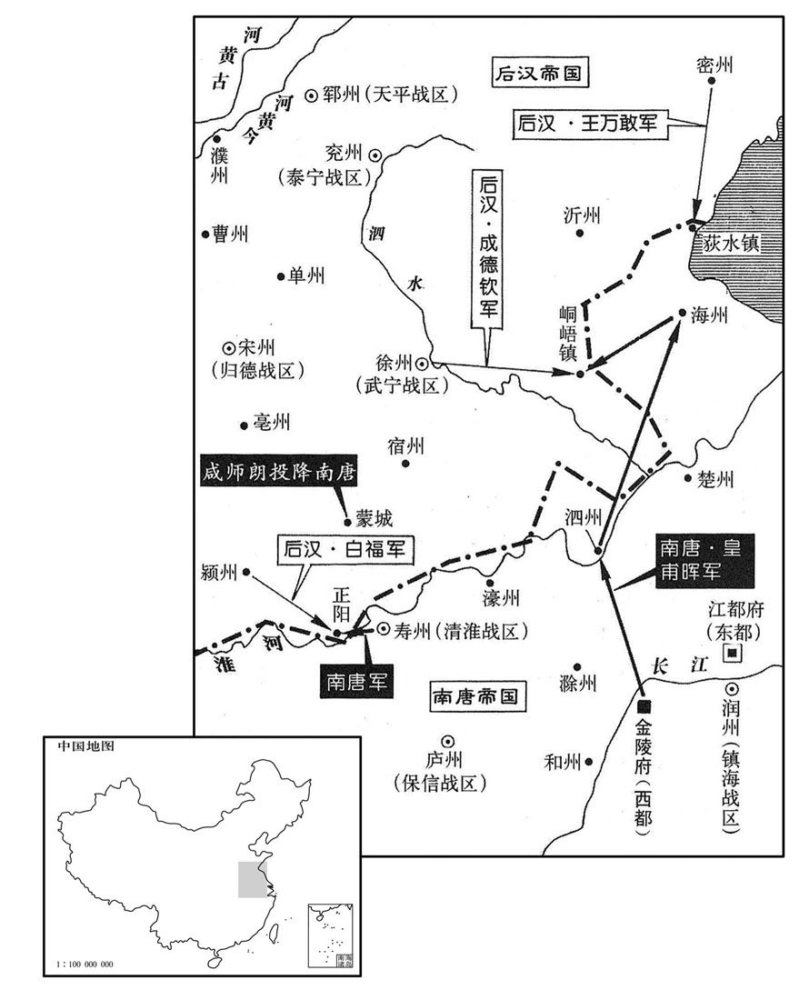
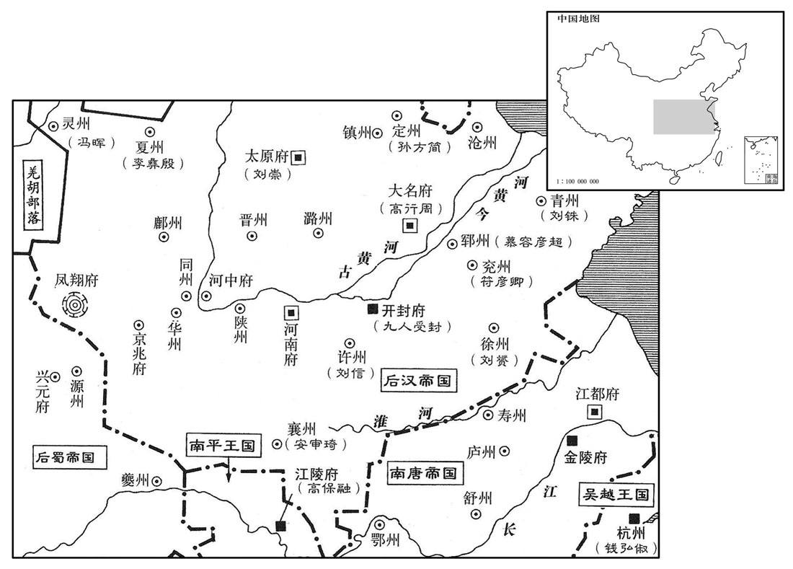

卷次与人物目录 / 卷288
资治通鉴 · 卷第二百八十八【后汉纪三】
公元948年至公元949年 · 原文、白话与胡三省注
本页按胡注本编排保存全卷内容。白话采用本站所据译本，未可靠对应的内容另列说明；事件标题用于定位，并非原书文字。
本卷共125段原文，125段有译文对应，0段缺译或待核对。
卷第二百八十八【后汉纪三】起着雍涒滩（戊申）三月，尽屠维作噩（己酉），凡一年有奇。
卷首原文与注释
高祖睿文圣武昭肃孝皇帝下
公元948年 · 后汉高祖睿文圣武昭肃孝皇帝干佑元年
干佑元年〔（戊申、九四八）〕
上传原文的注释括号有异常，字符原样保留；无法可靠划分的段落默认全文显示。
本年记事分属相邻卷，按原书顺序分别保留：第287卷 · 第288卷。
本年事件索引（现代整理）
- 后汉起复史弘肇并加兼侍中
- 侯益厚赂执政和史弘肇后获任开封尹
- 后汉将广晋府改为大名府并将晋昌军改为永兴军
- 侯益在朝中诋毁王景崇，赵思绾因惧入朝获罪而准备叛乱
- 赵思绾趁入城搬家夺取长安并起兵控制州城
- 王景崇请求朝廷任命自己主持凤翔，朝廷改派王守恩与赵晖
- 虢州艺人靖边庭杀死团练使田令方后劫掠州民
- 孙方简不满契丹任命而据狼山，后又归附后汉以抵御契丹
- 孙方简等收复定州易州，契丹占据的晋末州县重新归汉
- 后汉任刘在明为成德节度使
- 契丹主以失守罪鸩杀麻荅
- 杨邠反对苏逢吉等人频繁任命官员，宰相间产生嫌隙
- 李涛建议调任两位枢密使掌管要镇，后汉隐帝罢免李涛
- 护国李守贞与永兴凤翔诸镇上报谋反
- 李守贞因杜重威被杀而惧怕后汉，暗中扩军联络契丹
- 赵修己多次劝李守贞不要妄动，僧人总伦却预言他将称帝
- 赵思绾献后晋御衣后，李守贞自称秦王并据潼关
- 张彦威预先派兵守同州，使李守贞未能兼并该州
- 定难节度使李彝殷请兵讨伐羌族叛军，朝廷以不宜先动兵劝止
- 后汉收复潼关
- 后汉隐帝任杨邠为宰相并提升郭威与王章职权
- 杨邠独揽政事并限制官员任命，士大夫仕进受阻
- 后汉派郭从义白文珂等分路进兵讨伐赵思绾李守贞
- 王景崇留在凤翔集结丁壮并暗中策划叛乱
- 契丹主在辽阳逼后晋出帝交出未婚女儿赐给妻兄
- 王景崇致书后蜀凤州刺史徐彦请求互市
- 后晋翰林学士徐台符从幽州逃回
- 黄河在滑州鱼池决口
- 后汉发生日食
- 后汉任刘词为河中行营马步都虞候
- 王景崇遣使向后蜀请降并接受李守贞所授官爵
- 高从诲与后汉断交后因商旅不至而请罪恢复朝贡
- 后汉尚洪迁攻长安时伤重身亡
- 后汉任李谷为西南面行营都转运使
- 后汉加郭威同平章事
- 后蜀主孟昶处死贪暴的张业并令王处回辞去中枢职务
- 后蜀主孟昶罢免王处回并任其为武德节度使
- 后蜀任高延昭王昭远参与枢密事务并纵容二人掌管府库
- 后汉任郭从义为永兴节度使并令白文珂暂知河中行府事
- 后蜀任李昊与徐光溥为宰相
- 后蜀安思谦诬告赵廷隐谋反，赵廷隐在李廷珪进言后得以免罪
- 赵晖抵达长安后上奏请求讨伐王景崇
- 刘崇因与郭威有隙而在河东扩军备战并不奉朝廷诏命
- 郭威受命统领西面诸军讨伐河中永兴凤翔叛镇
- 冯道建议郭威厚赏士卒以瓦解李守贞所依恃的军心
- 后汉诏令白文珂进攻河中、赵晖进攻凤翔
- 后蜀授赵廷隐太傅宋王并准其在家参议国事
- 后蜀将凤翔改为岐阳军并任王景崇为节度使
- 后汉封吴越王钱弘俶为东南兵马元帅
- 郭威采纳扈从珂建议先攻河中并以宽厚治军赢得将士归心
- 李守贞原以为旧部会开城迎降，见郭威军士后大惊
- 白文珂攻取河中西关城后诸军分营围城
- 郭威反对急攻河中，命军民修筑长围断绝城中出路
- 后蜀王处回请求退休并获准以太子太傅致仕
- 南汉主遣钟允章赴楚求婚遭拒，认定楚国内乱可乘
- 马希萼请求与马希广分别向后汉进贡并求封官，朝廷要求兄弟和睦
- 南唐赵晖派李彦从击退后蜀散关援军
- 后蜀主设立匦函以便臣民上书
- 王景崇杀害侯益七十余名家属，侯益幼子被乳母救走
- 李守贞多次突围失败并向外求援，仍相信总伦所言将称帝
- 王景崇与赵思绾派儿子赴成都求援
- 赵晖设计诱敌并攻克西关城，王景崇退守凤翔大城
- 后蜀不顾毋昭裔劝阻派安思谦与韩保贞救援凤翔
- 王景崇迎接后蜀援军，申贵设伏击败汉军并攻占宝鸡寨
- 荆南高从诲病重后去世，子高保融接掌军府
- 高允权与李彝殷因边界冲突求援，朝廷出面调解
- 李崧回朝后谨慎避祸，却因家宅争议遭苏逢吉与陶谷排挤
- 史弘肇严刑专杀，后汉民间因恐惧而谣言四起
- 苏逢吉借李屿仆人告变诬陷李崧兄弟谋反并处死其家族
- 陶谷承认自己参与李崧家族冤案，李昉听后惊惧
- 史弘肇厌恶文士并任用亲信杨乙搜刮归德军财利
- 李守贞遣朱舒元与李平向南唐求援
- 南唐派李金全等救援河中，诸军畏战退屯海州
- 南唐主致书后汉请复通商并赦免李守贞，未获回应
- 后汉任高保融为荆南节度使兼同平章事
- 南汉吴怀恩攻取贺州昭州并用陷阱击败楚军
- 王景崇屡向后蜀求援，孟昶对安思谦迟疑出兵不满
- 后蜀安思谦在散关击败后汉守军
- 郭威亲赴华州协调围城战，后蜀援军粮尽撤退
- 后蜀徐光溥因轻薄言辞调戏公主而被罢免
三月，丙辰，史弘肇起复，加兼侍中。
>[1]>三月，丙辰（初七），史弘肇出仕复职，加官兼侍中>。
侯益家富于财，厚赂执政及史弘肇等，由是大臣争誉之。〔执政，谓苏逢吉、杨邠等，皆当时大臣也。誉，音余。〕丙寅，以益兼中书令，行开封尹。〔行者，行尹事，未正除也。〕
>[2]>侯益家里财产丰厚，送厚礼贿赂执掌政权的大臣和史弘肇等人，因此众大臣交口称赞。丙寅（十七日），任命侯益兼中书令，代理开封尹。
改广晋〔【章：十二行本「晋」下有「府」字；乙十一行本同。】〕为大名府，〔左传：晋卜偃曰：「魏，大名也。」取以名府。〕晋昌军为永兴军。〔以革晋命，故改广晋与晋昌。〕
>[3]>改广晋府为大名府，改晋昌军为永兴>军。
侯益盛毁王景崇于朝，言其恣横。〔侯益以王景崇欲杀己，幸免而归朝，故毁之。横，户孟翻。〕景崇闻益尹开封，知事已变，内不自安，且怨朝廷。〔怨朝廷不能体先帝遗旨，反听侯益之谗也。〕会诏遣供奉官王益如凤翔，征赵匡赞牙兵诣阙，赵思绾等甚惧，〔赵思绾，赵匡赞牙校也，见上卷。〕景崇因以言激之。思绾途中谓其党常彦卿曰：「小太尉已落其手，〔赵思绾等本赵延寿部曲，故呼匡赞为小太尉，言匡赞入朝为已落汉人之手也。〕吾属至京师，并死矣，柰何﹖」彦卿曰：「临机制变，子勿复言！」〔复，扶又翻。」
>[4]>侯益在朝中大肆诋毁王景>崇，说他恣意横行。王景>崇听说侯益为开封尹，明白事态已产生变化，内心忐忑不安，而且埋怨朝廷。正赶上诏令派供奉>官王益到凤翔>，取赵匡赞的牙兵带回京城，牙校赵思绾等人很害怕，王景>崇乘机用话语相激。赵思绾在路上对他的党羽常彦卿说：“小太尉>赵匡赞已落入他们的手中，我们到达京城，都得死了，怎么办？”常彦卿说：“见机行事，你不要再说！”
癸酉，至长安，永兴节度副使安友规、巡检乔守温出迎王益，置酒于客亭。〔诸州镇皆有客亭，以为迎送宴饯之所。〕思绾前白曰：「壕寨使已定舍馆于城东。〔壕寨使，掌营造浚筑及次舍下寨。〕今将士家属皆在城中．〔赵思绾部兵先从赵匡赞镇长安，故家属在城中。〕欲各入城挈家诣城东宿。」友规等然之。时思绾等皆无铠仗，既入西门，有州校坐门侧，思绾遽夺其剑斩之。其徒因大噪，持白梃，〔校，户教翻。梃，徒鼎翻。〕杀守门者十余人，分遣其党守诸门。思绾入府，开库取铠仗给之，友规等皆逃去。思绾遂据城，集城中少年，得四千余人，缮城隍，葺楼堞，旬日间，战守之具皆备。〔少，诗照翻。葺，七入翻。堞，达协翻。〕
>癸酉（二十四日），到达长安>，永兴>节度副使安友规、巡检>乔守温>出城迎接王益，并在客亭设置酒宴款待。这时，赵思绾走上前来说：“壕寨使已经把舍馆定在城东，现在将士的家属都在城中，想各自进城把家属带到城东住宿。”安友规等人同意。当时赵思绾等人都没有武器铠甲，进了西门，见有该州军校坐在门旁，赵思绾突然夺过他的剑把他杀死；赵思绾的党羽乘势大喊大叫，拿着棍子，打死十几个守门兵士，派遣党羽分别把守各个大门。赵思绾进入府衙，打开府库取出武器铠甲分给大家，安友规等人都逃跑离开。赵思绾于是占据了长安>城，集中城内少年，约有四千多人，修缮护城壕沟，整治城楼矮墙，十天之内，作战守卫的器械样样齐备。
王景崇讽凤翔吏民表景崇知军府事，朝廷患之，甲戍，徙静难节度使王守恩为永兴节度使，〔欲以制赵思绾。难，乃旦翻。〕徙保义节度使赵晖为凤翔节度使，〔欲以制王景崇。〕并同平章事。以景崇为邠州留后，令便道之官。
王景>崇示意凤翔>的官吏士民向朝廷上表，推举自己主持军府事务，朝廷对此深为担忧。甲戌（二十五日），调静难节度使>王守恩为永兴节度使>，调保义节度使>赵晖为凤翔节度使>，都为同平章事>。命王景>崇为州留后，让他抄近路赴任。
虢州伶人靖边庭杀团练使田令方，驱掠州民，奔赵思绾。〔靖，姓也。优伶之名与姓通取一义，所以为谑也。何氏姓苑曰：靖姓，齐靖郭君之后。风俗通曰：靖姓，单靖公之后也。〕至潼关，〔虢州西北至潼关百有余里。〕潼关守将出击之，其众皆溃。
>
虢州的艺人靖边庭杀死团练使田令方，裹胁州中百姓，投奔赵思绾。到了潼关，潼关守将出关迎击，他的一群人全都溃散了。
初，契丹主北归，至定州，〔契丹主德光北归，死于杀胡林。此谓兀欲北归至定州也。〕以义武节度副使邪律忠为节度使，徙故节度使孙方简为大同节度使。〔晋齐王开运三年，契丹主德光以孙方简为义武节度使。考异曰：实录，「方简」作「方谏」。按方简避周讳，改名方谏；实录误也。〕方简怨恚，且惧入朝为契丹所留，迁延不受命，〔恚，于避翻。朝，直遥翻。〕帅其党三千人保狼山故寨，〔孙方简兄弟保狼山，见二百八十五卷晋开运三年。帅，读曰率；下同。〕控守要害。契丹攻之，不克。未几，遣使请降，〔几，居岂翻。〕帝复其旧官，以扞契丹。〔复以为义武节度使。〕
>[5]>当初，契丹主北行回国，来到定州，命义武节度副使邪律忠为节度使>，调原节度使>孙方简为大同节度使>。孙方简怨恨愤怒，又怕到了契丹朝廷被他们扣留，所以拖延时日不接受任命，率领他的党羽三千多人守卫狼山原来的山寨，控制固守各处要害。契丹兵进攻，未能攻克。不久，他派使者见后汉高祖>请求归降，高祖恢复他的原官职，用他来抵御契丹。
邪律忠闻邺都既平，〔去年十一月，杜重威降，邺都平。事见上卷。〕常惧华人为变。诏以成德留后刘在明为幽州道马步都部署，使出兵经略定州。未行，忠与麻荅等焚掠定州，悉驱其人弃城北去。〔定州东至镇州，止隔祁州耳。契丹闻镇州将出兵，故弃城而去。〕孙方简自狼山帅其众数百，还据定州，又奏以弟行友为易州刺史，方遇为泰州刺史。每契丹入寇，兄弟奔命，〔奔命者，奔走以救急也。〕契丹颇畏之。于是晋末州县陷契丹者，皆复为汉有矣。
>邪律忠听说邺都>已被平定，常常害怕汉人发动事变。后汉高祖>诏令成德留后刘在明为幽州道马步都部署，派他出兵整治定州。还没出兵，邪律忠和麻等人已劫掠焚烧了定州，驱赶定州百姓弃城北去。孙方简从狼山率领几百名军兵，回来占领定州，又上奏章请任命弟弟孙行友为易州刺史>、孙方遇为泰州刺史>。每当契丹人入侵，兄弟三人就奔走抵抗，契丹人很害怕他们，于是后晋>末年州县陷落到契丹人手中的，都又为后汉>所有了。
丙子，以刘在明为成德节度使。
>丙子（二十七日），后汉>任命刘在明为成德节度使>。
麻荅至其国，契丹主责以失守。麻荅不服，曰：「因朝廷征汉官致乱耳。」〔谓征冯道等也。事见上卷上年。〕契丹主鸩杀之。
>
麻回到辽国，契丹主责备他失守，麻不服气，说：“这是因为朝廷招收任用汉官，才导致今天的祸乱！”契丹主将他毒死。
苏逢吉等为相，多迁补官吏；杨邠以为虚费国用，所奏多抑之，逢吉等不悦。
>[6]>苏逢吉等人作宰相>，频繁提升补充官员，杨认为白白耗费国家钱财，在奏章里多次贬抑这种作法，苏逢吉等人不高兴。
中书侍郎兼户部尚书、同平章事李涛上疏言：「今关西纷扰，外御为急。〔上，时掌翻。〕二枢密皆佐命功臣，官虽贵而家未富，宜授以要害大镇。〔李涛之疏，承苏逢吉之意也。二枢密，谓杨邠、郭威。〕枢机之务在陛下目前，易以裁决，〔易，以豉翻。〕逢吉、禹珪自先帝时任事，皆可委也。」杨邠、郭威闻之，见太后泣诉，称：「臣等从先帝起艰难中，今天子取人言，欲弃之于外。况关西方有事，〔谓岐、雍举兵反。〕臣等何忍自取安逸，不顾社稷。若臣等必不任职，乞留过山陵。」太后怒，以让帝，曰：「国家勋旧之臣，柰何听人言而逐之！」帝曰：「此宰相所言也。」因诘责宰相。〔诘，去吉翻。〕涛曰：「此疏臣独为之，他人无预。」丁丑，罢涛政事，勒归私第。〔为将相交恶张本。〕
>中书侍郎>兼户部尚书>、同平章事>李涛上疏说：“现在关西>形势纷乱，抵御外寇入侵是当务之急。二位枢密使都是先朝辅佐创业的功臣，官阶虽然显贵但家资并不富裕，应该授予他们重要的大藩镇>。枢密机要的事务，在陛下眼前，容易裁决，况且苏逢吉、苏禹都是从先帝时就任职，都可以委托。”杨、郭威>听说，入宫向太后哭诉道：“我们跟随先帝在艰难中起来，现在天子听信人几句话，要把我们弃置在外。况且关西>正有事，我们怎忍自求安逸，不顾社稷的安危。如果我们一定不称职，请求留我们过了先帝灵柩出殡。”太后大怒，责备后汉>隐帝道：“国家元勋旧臣，怎么能听人几句话就放逐他们！”后汉>隐帝说：“这是宰相>说的。”于是又去责问宰相>苏逢吉等人，李涛说：“这篇疏文是臣独自写的，别人没有参预。”丁丑（二十八日），罢免李涛官职，勒令回归家中。
是日，邠、泾、同、华四镇〔邠帅王守恩，泾帅史匡威，同帅张彦威，华帅扈从珂。华，户化翻。〕俱上言护国节度使兼中书令李守贞与永兴、凤翔同反。〔赵思绾据永兴，王景崇据凤翔。〕
>[7]>当天，、泾、同、华四镇都向朝廷上报：护国节度使>兼中书令李守贞和永兴>、凤翔>二镇同时反叛。
始，守贞闻杜重威死而惧，〔杜重威死见上卷是年正月。〕阴有异志。自以晋世尝为上将，有战功，〔李守贞破栔丹于马家口而克青州，又破契丹于阳城，其功不细。〕素好施，得士卒心。〔好，呼到翻。施，式豉翻。〕汉室新造，天子年少初立，〔少，诗照翻。〕执政皆后进，有轻朝廷之志。乃招纳亡命，养死士，治城堑，缮甲兵，昼夜不息。遣人间道赍丸结契丹，屡为边吏所获。〔治，直之翻。间，古苋翻。〕
>开始，李守贞听说杜重威被杀而心中害怕，暗中萌生反叛念头。自以为后晋>时曾为上将，有战功，平常慷慨好施，所以颇得士兵之心。现在后汉>新建，皇帝年轻刚刚继位，执掌朝政都是后来进身的官员，所以有轻视朝廷看法。于是招纳亡命之徒，豢养敢死之士，治理城墙壕堑，修缮武器铠甲，日夜不停。又派人从小路带着蜡丸密信去勾结契丹，多次被把守边关的官吏所查获。
浚仪人赵修己，素善术数，〔旧唐书地理志：浚仪故县，隋置，在今县北三十里；唐武德四年，移县于州北罗城内；贞观元年，移于州西一里；后治郭下。〕自守贞镇滑州，署司户参军，累从移镇，〔晋开运初，李守贞镇义成，后徙镇泰宁、天平、归德，至是镇护国为乱。〕为守贞言：「时命不可，勿妄动！」〔为，于伪翻。〕前后切谏非一，守贞不听，乃称疾归乡里。僧总伦，以术媚守贞，言其必为天子，守贞信之。又尝会将佐置酒，引弓指舐掌虎图曰：「吾有非常之福，当中其舌。」一发中之，〔舐，直氐翻。中，竹仲翻。〕左右皆贺。守贞益自负。
>浚仪人赵修己，素来擅长星象占卜之术，自从李守贞镇守滑州，署理司户参军，屡次跟随藩镇>调动，对李守贞说：“时运、天命>不允许，不要轻举妄动！”前后恳切劝谏不止一次，李守贞不听，他于是声称有病回家乡。僧人总伦，用他的法术讨好李守贞，说他一定要作天子，李守贞信以为真。又曾和将佐聚会设置酒宴，弯弓搭箭指着《舐掌虎图》说：“我如果有非常的福份，就当
>
射中它的舌头。”一箭射中，周围人都向他祝贺，李守贞更加自命不凡。
会赵思绾据长安，奉表献御衣于守贞，守贞自谓天人协契，乃自称秦王。遣其骁将平陆王继勋〔【章：十二行本「勋」下有「将兵」二字；乙十一行本同。】〕据潼关，〔旧唐书地理志：陕州平陆县，隋之河北县也。唐天宝三载，陕郡太守李齐物开三门，石下得戟，大刃有「平陆」篆字，因改为平陆县。九域志：平陆县在陕州北五里。〕以思绾为晋昌节度使。
>正赶上赵思绾占领了长安>城，向李守贞奉上表章献上御衣。李守贞自认为是天意、人心共同默契，于是自称秦王，派他的骁将平陆人王继勋占据潼关，任命赵思绾为晋昌节度使>。
同州距河中最近，〔河中府西至同州六十里耳。〕匡国节度使张彦威，〔考异曰：周太祖实录作「彦成」，盖避周祖讳；薛史因之。今从广本。〕常诇守贞所为，〔诇，古永翻，又翾正翻。〕奏请先为之备，诏滑州马军都指挥使罗金山将部兵戍同州；故守贞起兵，同州不为所并。金山，云州人也。
>同州距离河中最近，匡国节度使>张彦威常侦察李守贞的所作所为，并奏请朝廷早作防范，后汉>隐帝颁诏令滑州马军都指挥使>罗金山>率所部守卫同州；所以李守贞起兵时，同州没有被他吞并。罗金山>是云州>人。
定难节度使李彝殷发兵屯境上，奏称：「去三载前〔难，乃旦翻。去，已往也。〕羌族辷毋〔龙龛手镜：辷，音夜。毋，读如谟。〕杀绥州刺史李仁裕叛去，请讨之。」庆州上言：「请益兵为备。」〔以备羌也。〕诏以司天言，今岁不利先举兵，谕止之。
>[8]后汉>定难节度使>李彝殷起兵驻守境上，向朝廷上奏章，称：“三年以前，羌族毋杀死绥州刺史>李仁裕反叛逃走，请求发兵征讨。”庆州上奏道：“请增加兵力作准备。”后汉>隐帝颁诏书以司天官>说，今年不利于先动兵戈，劝谕制止众将行动。
夏，四月，辛巳，陕州都监王玉奏克复潼关。〔监，古衔翻。〕
>[9]>夏季，四月，辛巳（初二），陕州>都监王玉奏报收复潼关。
帝与左右谋，以太后怒李涛离间，〔间，古苋翻。〕欲更进用二枢密，以明非帝意。左右亦疾二苏之专，欲夺其权，共劝之。〔二枢密，杨邠、郭威。二苏，逢吉、禹珪。〕壬午，制以枢密使杨邠为中书侍郎兼吏部尚书、同平章事，枢密使如故；以副枢密使郭威为枢密使；又加三司使王章同平章事。
>[10]后汉>隐帝和身边的大臣商量，因太后恼怒李涛的挑拔离间，现在想再进用两位枢密使，以便表明前举不是皇帝的意思。大臣们也憎恨二苏专政，想夺他们的权，所以都劝勉皇帝这样干。壬午（初三），制令枢密使杨为中书侍郎>兼吏部尚书>、同平章事>，枢密使官职照旧；命副枢密使郭威>为枢密使；又三司使>王章加官同平章事>。
凡中书除官，诸司奏事，帝皆委邠斟酌。自是三相拱手，〔三相，窦贞固、苏逢吉、苏禹珪。〕政事尽决于邠。事有未更邠所可否者，〔更，工衡翻，经也。〕莫敢施行，遂成凝滞。三相每进拟用人，苟不出邠意，虽簿、尉亦不之与。邠素不喜书生，〔喜，许配翻。〕常言：「国家府廪实，甲兵强，乃为急务。至于文章礼乐，何足介意！」既恨二苏排己，〔以其使李涛上疏，请出二枢密为外镇也。〕又以其除官太滥，为众所非，欲矫其弊，由是艰于除拜，士大夫往往有自汉兴至亡不沾一命者；〔此所谓士大夫，指言内外在官之人。命，言汉朝之命。〕凡门荫及百司入仕者悉罢之。〔门荫，谓任子也。百司入仕，所谓流外也。〕虽由邠之愚蔽，时人亦咎二苏之不公所致云。
>凡中书省>任命官员、各司上奏公事，后汉>隐帝全委任杨斟酌办理。从此其它三位宰相>全都拱手无事，一切政事都决定于杨。凡事有未经杨认可，没有人敢施行，便形成梗塞。三位宰相>每次所拟的进用人选，只要不出于杨之意，即使主簿>、尉这样的小官也不给，杨历来不喜欢书生，常说：“国家的府库仓廪要充实，兵力要强盛，这才是当务之急。至于文章礼乐，有什么值得介意！”他既怀恨二苏曾排斥自己，又因二苏原来任命官员太滥，被众人非议指责，想要矫正这一弊病，因此授予官职就很难了，士大夫里多有从后汉>兴到后汉>亡不曾受过一次升迁；还规定：凡靠祖、父余荫得官的子弟以及从各个部门入仕的，全部罢免。这虽说由于杨的愚昧闭塞，但当时人们也归咎于二苏封官办事不公所致。
以镇宁节度使郭从义充永兴行营都部署，将侍卫兵讨赵思绾。戊子，以保义节度使白文珂为河中行营都部署，内客省使王峻为都监。辛卯，削夺李守贞官爵，命文珂等会兵讨之。乙未，以宁江节度使、侍卫步军都指挥使尚洪迁为西面行营都虞候。〔宁江军夔州，时属蜀境，尚洪迁遥领也。〕
>[11]后汉>隐帝命镇宁节度使>郭从义充任永兴>行营都部署，率领侍卫兵讨伐赵思绾。戊子（初九），命保义节度使>白文珂为河中行营都部署，内客省使王峻为都监。辛卯（十二日），削去李守贞的官职爵位，命白文珂等将领合兵讨伐他。乙未（十六日），命宁江节度使>、侍卫步军都指挥使>尚洪迁为西面行营都虞候。
王景崇迁延不之邠州，阅集凤翔丁壮，诈言讨赵思绾，仍牒邠州会兵。〔王景崇欲并岐、邠之兵以举事。〕
>[12]王景>崇拖延时日不去州上任，招集、检阅凤翔>的壮丁，假称要讨伐赵思绾，并发牒文与州合兵。
契丹主如辽阳，〔汉辽东郡有辽阳县，大梁水与辽水会处也，契丹于此置辽阳府。欧史：自黄龙府西北行一千三百里至辽阳府。按，辽阳府，契丹之东京，旧勃海地，距燕京二千五百一十里。〕故晋主与太后、皇后皆谒见。〔见，贤遍翻。〕有禅奴利者，契丹主之妻兄也，闻晋主有女未嫁，诣晋主求之；晋主辞以幼。后数日，契丹主使人驰取其女而去，以赐禅奴。
>[13]>契丹主到了辽阳>，前后晋>主和太后、皇后都拜见他。有个叫禅奴利的，是契丹主妻子的哥哥，他听说后晋>主有女儿尚未出嫁，就去见后晋>主求婚，后晋>主以女儿年龄幼小推辞。过了几天，契丹主派人骑马取走他女儿，赐给禅奴利。
王景崇遗蜀凤州刺史徐彦书，求通互市。〔遗，唯季翻。〕壬戍，蜀主使彦复书招之。
>[14]王景>崇致信给后蜀>凤州刺史>徐彦，要求互通贸易。壬戌（疑误），后蜀>主命徐彦回信招降他。
契丹主留晋翰林学士徐台符于幽州，〔徐台符从契丹主北去见上卷上年。〕台符逃归。
>[15]>契丹主扣留后晋翰林学士>徐台符于幽州，徐台符逃回。
五月，乙亥，滑州言河决鱼池。〔鱼池，地名，河决之后，谓之鱼池口。〕
>[16]>五月，乙亥（二十七日），滑州上报，黄河在鱼池决口。
六月，戊寅朔，日有食之。
>[17]>六月，戊寅朔（初一），出现日食。
辛巳，以奉国左厢都虞候刘词充河中行营马步都虞候。
>[18]>辛巳（初四），后汉>隐帝命奉国左厢都虞候刘词充任河中行营马步都虞候。
乙酉，王景崇遣使请降于蜀，亦受李守贞官爵。
>[19]>乙酉（初八），王景>崇派使者向后蜀>请求归降，同时接受李守贞给予的官爵。
高从诲既与汉绝，〔见上卷天福十二年。〕北方商旅不至，境内贫乏，乃遣使上表谢罪，乞修职贡；诏遣使慰抚之。
>[20]高从诲>与后汉>断绝往来后，北方的商人不再来，境内贫困、物资缺乏，于是派使者向后汉>上表章谢罪，并请允许履行交纳贡品的职责；后汉>隐帝诏令派使者前去安抚。
西面行营都虞候尚洪迁攻长安，伤重而卒。〔卒，子恤翻。〕
>[21]>西面行营都虞候尚洪迁攻打长安>，身受重伤而去世。
秋，七月以工部侍郎李谷充西南面行营都转运使。〔为李谷见亲任于周朝张本。〕
>[22]>秋季，七月，后汉>隐帝命工部侍郎>李充任西南面行营都转运使>。
庚申，加枢密使郭威同平章事。
>[23]>庚申（十三日），枢密使郭威>加官任同平章事>。
蜀司空兼中书侍郎、同平章事张业，性豪侈，强市人田宅，〔以威力临人，人畏其威力，不得已而就与为市，是为强市。〕藏匿亡命于私第，置狱，系负债者或历年，至有瘐死者。〔苏林曰：瘐，病也。囚徒病，律名为瘐。如淳曰：律：囚以饥寒死曰瘐。音勇主翻。〕其子检校左仆射继昭，好击剑，〔好，呼到翻。〕尝与僧归信访善剑者，右匡圣都指挥使孙汉韶与业有隙，密告业、继昭谋反；翰林承旨李昊、奉圣控鹤马步都指挥使安思谦复从而谮之。〔复，扶又翻。〕甲子，业入朝，蜀主命壮士就都堂击杀之，下诏暴其罪恶，籍没其家。
>[24]后蜀>司空兼中书侍郎>、同平章事>张业，生性豪放、奢侈，强买别人的田地住宅，在自己的宅院里藏匿亡命的罪犯；私设监狱，抓欠债的人，有时关押多年以至有病死的。他的儿子检校左仆射>张继昭，喜好击剑，曾和归信和尚走访善于击剑的高手。右匡圣都指挥使>孙汉韶和张业有仇隙，密告张业、张继昭二人谋反；翰林>承旨李昊、奉圣控鹤马步都指挥使>安思谦又趁机诬陷他们，甲子（十七日），张业上朝，后蜀>主命令壮士在都堂>里把他杀死，下诏书公布他的罪恶，抄没他的家产。
枢密使、保宁节度使兼侍中王处回，亦专权贪纵，〔王处回以节兼侍中，不在阆州。〕卖官鬻狱，四方馈献，皆先输处回，次及内府，〔此所谓四方，止以蜀之境上言之。〕家赀巨万。子德钧，亦骄横。〔横，户孟翻。〕张业既死，蜀主不忍杀处回，听归私第；处回惶恐辞位，以为武德节度使兼中书令。〔王处回亦不得至梓州。〕
>枢密使、保宁节度使>兼侍中>王处回，也擅权专横，贪婪恣肆，出卖官职，收受罪犯的贿赂，各地赠送的贡物，都先送到王处回处，其次给皇帝内府，他家产巨万，他的儿子王德钧，也骄横跋扈。张业被处死后，后蜀>主不忍心杀王处回，让他回家；王处回慌忙辞去官职，后蜀>主任他为武德节度使>兼中书令。
蜀主欲以普丰库使高延昭、茶酒库使王昭远为枢密使，〔普丰、茶酒二库使，皆蜀所置。〕以其名位素轻，乃授通奏使，知枢密院事。〔通奏使，亦蜀所置。〕昭远，成都人，幼以僧童从其师入府，蜀高祖爱其敏慧，令给事蜀主左右；至是，委以机务，府库金帛，恣其取与，不复会计。〔复，扶又翻。会，古外翻。至于宋兴，蜀主遂以用王昭远亡国。〕
后蜀>主想让普丰库使高延昭、茶酒库使王昭远为枢密使，但因他们的名声和地位向来轻微，就授予他们为通奏使，主持枢密院>事务。王昭远是成都人，年幼时做小和尚随他的师傅进入都府，后蜀>高祖喜爱他聪明敏捷，让他在后蜀>主身边供事；到这时，委任他国家重要事务，府库里的金银财帛，任其随意拿取，不再计算。
戊辰，以郭从义为永兴节度使，白文珂兼知河中行府事。〔时郭从义讨长安，就以永兴节授之；白文珂讨河中，因使之知行府事。〕
>[25]>戊辰（二十一日），后汉>隐帝任命郭从义为永兴节度使>，白文珂兼理主持河中行府事务。
蜀主以翰林承旨、尚书左丞李昊为门下侍郎兼户部尚书，翰林学士、兵部侍郎徐光溥为中书侍郎兼礼部尚书，并同平章事。
>[26]后蜀>主命翰林>承旨、尚书>左丞李昊为门下侍郎>兼户部尚书翰林学士>、兵部侍郎>徐光溥为中书侍郎>兼礼部尚书>，都为同平章事>。
蜀安思谦谋尽去旧将，〔去，羌吕翻。〕又谮卫圣都指挥使兼中书令赵廷隐谋反，欲代其位，夜，发兵围其第。会山南西道节度使李廷珪入朝，极言廷隐无罪，乃得免。廷隐因称疾，固请解军职；甲戍，蜀主许之。〔史言蜀主以新间旧。〕
>[27]后蜀>安思谦谋划把旧将全部除掉，又诬陷卫圣都指挥使>兼中书令赵廷隐谋反，企图取代他的权位，夜里派兵包围了他的住宅。正赶上山南西道节度使>李廷入朝，全力辩解赵廷隐没有罪，才免罪。赵廷隐因此声称有病，坚持请求解除自己的军权；甲戌（二十七日），后蜀>主答应。
凤翔节度使赵晖至长安；乙亥，表王景崇反状益明，请进兵击之。
>[28]凤翔节度使>赵晖来到长安>；乙亥（二十八日），上表章说王景>崇反叛的情况日益明显，请求发兵进攻。
初，高祖镇河东，皇弟崇为马步都指挥使，与蕃汉都孔目官郭威争权，有隙。及威执政，崇忧之。节度判官郑珙，劝崇为自全计，崇从之。珙，青州人也。〔珙，居竦翻。〕八月，庚辰，崇表募兵四指挥，自是选募勇士，招纳亡命，缮甲兵，实府库，罢上供财赋，皆以备契丹为名；朝廷诏令，多不禀承。〔于是之时，刘崇则为跋扈；然郭威既立，天下为周，河东非素有备，殆不能守也。〕
>[29]>当初，后汉高祖>镇守河东，皇弟刘崇是马步都指挥使>，与蕃汉都孔目官郭威>争夺权力，二人有仇隙。等到郭威>执政，刘崇很担扰。节度判官郑珙劝刘崇安排保全自己之计，刘崇听从了。郑珙是青州人。八月庚辰（初四），刘崇上表招募四个指挥的士兵，从此他精选招募勇士，收纳亡命的罪犯，修缮兵器装备，充实官仓府库，停止向朝廷上缴的赋税财物，都以防御契丹入侵为名；朝廷所下的诏令，大多不接受。
自河中、永兴、凤翔三镇拒命以来，朝廷继遣诸将讨之。昭义节度使常思屯潼关，白文珂屯同州，赵晖屯咸阳。〔常思、白文珂不敢逼河中，赵晖不敢逼凤翔。〕惟郭从义、王峻置栅近长安，而二人相恶如水火，〔近，其靳翻。恶，如字，又乌路翻。〕自春徂秋，皆相仗莫肯攻战。帝患之，欲遣重臣临督，壬午，以郭威为西面军前招慰安抚使，〔考异曰：薛史周太祖纪：「七月十三日，授同平章事，即遣西征，以安慰招抚为名。八月六日发，离京师。」按汉隐帝、周太祖实录，「七月，加平章事，」制词无西征之言；至八月壬午，方受命出征。盖薛史之误。〕诸军皆受威节度。
>[30]>自从河中、永兴>、凤翔>三个藩镇>抗拒朝廷命令以来，朝廷连续派众将领讨伐他们。昭义节度使>常思屯兵潼关，白文珂屯兵同州，赵晖屯兵咸阳>。只有郭从义、王峻在靠近长安>的地方设置栅栏，但是郭、王二人相互交恶，就像水火不能相容，所以从春到秋二人都对峙观望不肯进攻作战。后汉>隐帝为此忧虑，想派一位朝廷重臣临阵督战，壬午（初六），命郭威>为西面军前招慰安抚使>，各军都受郭威>的调度。
威将行，问策于太师冯道。道曰：「守贞自谓旧将，为士卒所附，愿公勿爱官物，以赐士卒，则夺其所恃矣。」威从之。〔郭威以卒伍之雄，而问策于冯道之老腐者，观其所以答与威所以从，则人之材识，不合乎道者则有之，若其量势应物，未可妄议。〕由是众心始附于威。〔为郭威得天下张本。〕
郭威>将要上路，向太师冯道>请教良策。冯道>说：“李守贞自认为是老将，士兵之心都归附于他；望您不要吝惜官家的财物，要用以赏赐士兵，这样就夺走了他所倚仗的优势了。”郭威>听从了冯道>的这条计策。从此众人之心开始归附郭威>。
诏白文珂趣河中，赵晖趣凤翔。〔趣，七喻翻。〕
后汉>隐帝诏令，白文珂赶赴河中，赵晖赶赴凤翔>。
甲申，蜀主以赵廷隐为太傅，赐爵宋王，国有大事，就第问之。
>[31]>甲申（初八），后蜀>主任命赵廷隐为太傅，封爵为宋王，凡有国家大事，亲自到他家中询问。
戊子，蜀改凤翔曰岐阳军，〔以凤翔之地在岐山之阳也。〕己丑，以王景崇为岐阳节度使、同平章事。
>[32]>戊子（十二日），后蜀>改凤翔>为岐阳军；己丑（十三日），命王景>崇为岐阳节度使>、同平章事>。
乙未，以钱弘俶为东南兵马元帅、镇海．镇东节度使兼中书令、吴越国王。
>[33]>乙未（十九日），后汉>隐帝封吴越>钱弘为东南兵马都元帅>，镇海、镇东节度使>兼中书令，吴越>国王。
郭威与诸将议攻讨，诸将欲先取长安、凤翔。镇国节度使扈从〔【章：十二行本「从」作「彦」；乙十一本同。】〕珂日：「今三叛连衡，推守贞为主，守贞亡，则两镇自破矣。若舍近而攻远，虿一王、赵拒吾前，守贞掎吾后，〔掎，居蚁翻。〕此危道也。」威善之。于是威自陕州，白文珂及宁江节度使、侍卫步军都指挥使刘词自同州，常思自潼关，三道攻河中。〔九域志：陕州北至河中二百三十七里。同州东至河中六十里。潼关渡河至河中一百余里。陕，失冉翻。〕威抚养士卒，与同苦乐，小有功辄赏之，微有伤常亲视之；士无贤不肖，有所陈启，皆温辞色而受之；违忤不怒，小过不责。〔乐，音洛。忤，五故翻。〕由是将卒咸归心于威。
>[34]郭威>与众将领商议讨伐进攻，众将领想先夺取长安>、凤翔>。镇国节度使>扈从珂说：“现在三个叛藩联合，推举李守贞为主，如果李守贞灭亡，那两个藩镇>便不攻自破了。如果舍近攻远，万一王、赵在前面抵抗，李守贞在背后夹击，这是危亡之道。”郭威>认为很有道理。于是郭威>从陕州>，白文珂及宁江节度使>、侍卫步军都指挥使>刘词从同州，常思从潼关，从三条路进攻河中。郭威>抚养士兵，和他们同甘共苦，士兵们稍立军功就受到赏赐，稍有伤就经常亲自看望；谋士中无论是贤者还是不肖的，只要有事来陈述的，都和言悦色地接待他们；违背触犯他不发怒，小的过错不责罚。因此士兵、将领之心都归附于郭威>。
始，李守贞以禁军皆尝在麾下，受其恩施，〔施，式豉翻；下好施同。〕又士卒素骄，苦汉法之严，谓其至则叩城奉迎，可以坐而待之。〔李守贞习见凤翔、太原之事，以杨思权期汉兵耳。〕既而士卒新受赐于郭威，皆忘守贞旧思，己亥，至城下，扬旗伐鼓，踊跃诟噪；〔诟，古候翻，又许候翻。〕守贞视之失色。
>开始，李守贞以为禁军>都曾是自己的老部下，受过他的恩惠，而且士兵一贯骄横，苦于后汉>军法的严格；认为禁军>一到就会前来敲城门奉迎他为君主，可以坐着等待。但是士兵们新近在郭威>处受到赏赐，都忘了李守贞的旧恩；己亥（二十三日），兵至城下，挥扬军旗，擂响战鼓，踊跃辱骂呼喊，李守贞在城上看到，大惊失色。
白文珂克西关城，栅于河西，〔河中西关城在河西，所以护蒲津浮梁者也。〕常思栅于城南，威栅于城西。〔常思、郭威，盖近城立栅。〕未几，威以常思无将领才，先遣归镇。〔几，居岂翻。将，即亮翻；下同。遣常思归潞州，史言郭威能审人之能否。〕
>白文珂攻克西关城，在黄河西岸设营栅，常思在城南设营栅，郭威>在城西设营栅。不久，郭威>认为常思没有将领之才，先把他派回原藩镇>。
诸将欲急攻城，威曰：「守贞前朝宿将，健鬬好施，〔施，式豉翻。〕屡立战功。况城临大河，楼堞完固，未易轻也。〔易，以豉翻。〕且彼冯城而鬬，〔冯，读曰凭。〕吾仰而攻之，何异帅士卒投汤火乎！〔帅，读曰率。〕夫勇有盛衰，攻有缓急，时有可否，事有后先；不若且设长围而守之，使飞走路绝。吾洗兵牧马，坐食转输，〔输，舂遇翻。〕温饱有余。俟城中无食，公帑家财皆竭，〔帑，他朗翻。〕然后进梯冲以逼之，飞羽檄以招之。彼之将士，脱身逃死，父子且不相保，况乌合之众乎！思绾、景崇，但分兵縻之，不足虑也。」〔縻，忙皮翻，系也。史言郭威方略，亦因周之史官润色已成之文。〕乃发诸州民夫二万余人，使白文珂等帅之，刳长壕，筑连城，列队伍而围之。威又谓诸将曰：「守贞向畏高祖，不敢鸱张；〔向，谓昔时也。鸱张，言如鸱之张翼，欲高举远飞也。〕以我辈崛起太原，事功未着，有轻我心，故敢反耳。正宜静以制之。」乃偃旗卧鼓，但循河设火铺，连延数十里，番步卒以守之。遣戈军檥舟于岸，寇有潜往来者，无不擒之。于是守贞如坐网中矣。〔铺，普故翻。檥，鱼倚翻。番步卒者，使步卒分番迭守。张敬达之围晋阳，郭威之围河中，皆欲以持久制之。然敬达以败，郭威以胜者，晋阳有援而河中无援也。司马仲达急攻孟达而缓攻公孙渊，亦以有援无援而为缓急耳。〕
>众将领想赶快攻城，郭威>说：“李守贞是前朝有经验的老将，勇猛善斗，慷慨好施，多次建立战功。况且城临黄河，城楼护墙完好坚固，不容轻视。况且他凭借高城而战，我们仰面进攻，这和领着士兵去赴汤蹈火有什么不同！勇气有盛有衰，进攻有慢有急，时机有可有不可，办事情有后有先；不如先设置长长的包围圈困守他，使他上天无路入地无门。而我们磨洗兵器，放牧战马，静坐享用转运来的粮食，做到温饱有余。等城中没粮了，官家、私人的钱财全都枯竭，然后推进云梯冲车来逼近他们，飞传羽檄来招降他们。那边的将领士兵，各自脱身逃亡，就是父子也难以互相保护，何况是些乌合之众！赵思绾、王景>崇二处，只要分兵牵制住，不值得忧虑。”于是征发各州民夫二万多人，让白文珂等人率领他们，挖长沟，筑连城，排列队伍把河中城团团围住。郭威>又对众将领说：“李守贞过去害怕高祖，所以不敢嚣张；认为我们从太原崛起，事业功勋不显赫，有轻视我们之心，所以敢于反叛。我们正应该用静来制服他。”于是把军旗、战鼓都收起来，只沿黄河设置“火铺”传递军情，连绵几十里，派步卒轮番守护；派水军船只停泊在岸边，敌人有偷偷往来的，无不抓获，于是李守贞就像坐在罗网中了。
蜀武德节度使兼中书令王处回请老，辛丑，以太子太傅致仕。
>[35]后蜀武德节度使>兼中书令王处回请求告老退休，辛丑（二十五日），他以太子>太傅退休。
南汉主〔中国既国号曰汉，故岭南之汉，书南汉以别之。〕遣知制诰宣化锺允章〔宣化，汉领方县地，晋置晋兴郡，隋废郡，置宣化县及晋兴县。唐以宣化为邕州治所，晋兴亦属邕州。〕求婚于楚，楚王希广不许。南汉主怒，问允章：「马公复能经略南土乎﹖」〔复，扶又翻。〕对曰：「马氏兄弟，方争亡于不暇，安能害我！」南汉主曰：「然。希广懦而吝啬，其士卒忘战日久，此乃吾进取之秋也。」〔为南汉举兵攻楚张本。〕
>[36]南汉>主派知制诰宣化人钟允章到楚国求婚，楚王马希广不同意。南汉>主大怒，问钟允章：“马希广还能治理南方吗？”答道：“马氏兄弟正在争斗不暇，怎能伤害我们！”南汉>主说：“好！马希广为人懦弱而且吝啬，他的士兵很久都没打过仗，这正是我们进取的大好时光啊！”
武平节度使马希萼请与楚王希广各修职贡，求朝廷别加官爵，〔欲使潭、朗如二国然。〕希广用天策府内都押牙欧弘练、进奏官张仲荀谋，厚赂执政，使拒其请。九月，壬子，赐希萼及楚王希广诏书，谕以「兄弟宜相辑睦，凡希萼所贡，当附希广以闻。」希萼不从。
>[37]>楚国武平节度使>马希萼向后汉>朝廷提出要与楚王马希广各自尽职进奉贡品，请求朝廷另加封官爵。马希广采用天策府内都押牙欧弘练、进奏官张仲荀的计策，用厚礼贿赂执政大臣，让朝廷拒绝马希萼的请求。九月，壬子（初七），后汉>隐帝赐马希萼及楚王马希广诏书，劝谕他们“兄弟应该和睦相处，凡是马希萼的贡品，应当附于马希广贡品中上报”。马希萼不听从。
蜀兵援王景崇军于散关，赵晖遣都监李彦从袭击，破之，〔考异曰：实录，「戊辰，枢密使郭讳上言：『都监李彦从将兵掩袭川贼，至大散关，杀贼三千余，其余弃甲而遁。』」汉隐帝实录，「九月，李彦从败蜀兵于散关。」而蜀后主实录无之。蜀实录，「十月，安思谦败汉兵于时家竹林，遂焚荡宝鸡。十二月，又败汉兵于玉女潭。」而汉实录无之。盖两国各举其胜而讳其败耳。然汉实录言官军不满万人，而蜀兵数倍，是二三万人，非小役也，岂得全不书！杀三千人，非小败也，岂十月遽能再举！盖九月止是蜀边将小出兵，为汉所败，汉将因张大而奏之耳。又蜀实录，十月但云「思谦退次凤州」，不云「归兴元」，十二月云「思谦自兴元进次凤州」，盖十月脱略耳。〕蜀兵遁去。
>[38]后蜀>支援王景>崇的军队驻扎在散关，赵晖派都监李彦>从前去袭击，打败了他们，蜀军逃去。
蜀主以张业、王处回执政，事多壅蔽，己未，始置匦函，〔匦，居洧翻。〕后改为献纳函。
>[39]后蜀>主孟昶>认为张业、王处回主持政务时，自己多受蒙蔽而视听不清，己未（十四日），开始设置举报箱，名叫匦函，后改为献纳函。
王景崇尽杀侯益家属七十余人，〔怨侯益之毁己于朝也。〕益子前天平行军司马仁矩先在外，得免。庚申，以仁矩为隰州刺史。仁矩子延广，尚在襁褓，乳母刘氏以己子易之，〔凡择乳母，必取新生子者，许之携子，故得以易。〕抱延广而逃，乞食至于大梁，归于益家。
>[40]王景>崇把侯益的家属七十多人全部杀死，只有侯益的儿子前天平行军司马>侯仁矩事前在外，才免于一死。庚申（十五日），后汉>朝廷命侯仁矩为隰州刺史>。侯仁矩的儿子侯延广，还在襁褓之中，奶妈刘氏用自己的孩子和他调换了，抱着侯延广逃走，靠要饭走到大梁城，回到侯益家里。
李守贞屡出兵欲突长围，皆败而返；遣人赍蜡丸求救于唐、蜀、契丹，皆为逻者所获。〔逻，郎佐翻。〕城中食且尽，殍死者日众。〔殍，被表翻。〕守贞忧形于色，召总伦诘之，〔总伦媚守贞见上三月。诘，去吉翻。〕总伦曰：「大王当为天子，人不能夺。但此分野有灾，〔分，扶问翻。〕待磨灭将尽，只余一人一骑，乃大王鹊起之时也。」〔庄子曰：鹊上高城，乘危而巢于高枝之巅，城坏巢折，凌风而起。故君子之居世也，得时则义行，失时则鹊起。〕守贞犹以为然。
>[41]>李守贞屡次出兵想突出长围，都战败而回；派人带上蜡丸密信向南唐>、后蜀>、契丹求救，全被巡逻士兵抓获。城里粮食将要吃完，饿死的人一天比一天多。李守贞满脸愁云，召总伦和尚责问，总伦说：“大王应当为天子，别人不能夺走。但这分野有灾，等磨难将尽，只剩一人一马，就是大王鹊起的时候了。”李守贞仍然信以为真。
冬，十月，王景崇遣其子德让，赵思绾遣其子怀又，见蜀主于成都。
>冬季，十月，王景>崇派儿子王德让，赵思绾派儿子赵怀，到成都朝见后蜀>主。
戊寅，景崇遣兵出西门，赵晖击破之，遂取西关城。景崇退守大城；堑〔【章：十二行本「堑」上有「晖」字；乙十一行本同；张校同，云无注本亦无。】〕而围之，数挑战，不出。〔数，所角翻。挑，徒了翻。〕晖潜遣千余人擐甲执兵，〔擐，音宦。〕效蜀旗帜，循南山而下，〔帜，昌志翻。〕令诸军声言：「蜀兵至矣。」景崇果遣兵数千出迎之，晖设伏掩击，尽殪之。〔殪，壹计翻。〕自是景崇不复敢出。〔复，扶又翻。〕
>戊寅（初三），王景>崇派兵出西门，赵晖打败他，于是夺取西关城。王景>崇退守大城。赵晖挖起深沟包围住他们，多次挑战，王景>崇军队也不出来了。赵晖就偷偷派出一千多人身披铠甲手拿兵器，仿效后蜀>军队的旗号，沿南山>开下来，让各军叫道：“蜀兵到了！”王景>崇果然派出几千人马出城迎接，赵晖设下埋伏突然出击，出城军队全被歼灭。从此王景>崇再也不敢出城了。
蜀主遣山南西道节度使安思谦将兵救凤翔，左仆射兼门下侍郎、同平章事毋昭裔上疏谏曰：「臣窃见庄宗皇帝志贪西顾，前蜀主意欲北行，〔志贪西顾，言后唐庄宗利蜀之富而伐之也。前蜀主，谓王衍；意欲北行，言其锐意幸秦州也；事并见庄宗纪。上，时掌翻。〕凡在庭臣，皆贡谏疏，殊无听纳，有何所成！只此两朝，可为鉴诫。」不听，又遣雄武节使韩保贞引兵出汧阳以分汉兵之势。〔汧阳县属陇州。九域志：在州东六十七里。汧，苦坚翻。〕
后蜀>主派山南西道节度使>安思谦领兵救援凤翔>，左仆射>兼门下侍郎>、同平章事>毋昭裔上疏进谏道：“臣愚见，后唐>庄宗皇帝贪于向西征伐，前蜀>主意在向北进军，凡是在朝的臣子，全都劝谏上疏，一点都不听取采纳，又能有什么成就！只这两朝的先例，就可作为诫鉴。”后蜀>主不听，又派出雄武节度使>韩保贞从阳出兵来分散后汉>军队的兵力。
王景崇遣前义成节度使酸枣李彦舜等逆蜀兵；〔酸枣，古县，唐属汴州。九域志：在州东北九十里。〕丙申，安思谦屯右界，〔右界，盖宝鸡西界，汉、蜀分疆处也。〕汉兵屯宝鸡。思谦遣眉州刺史申贵将兵二千趣模壁，〔趣，七喻翻。〕设伏于竹林；丁酉旦，贵以兵数百压宝鸡而陈，〔陈，读曰阵。〕汉兵逐之，遇伏而败，蜀兵逐北，破宝鸡寨。蜀兵去，汉兵复入宝鸡。〔复，扶又翻。〕己亥，思谦进屯渭水，〔渭水过宝鸡县北。〕汉益兵千戍宝鸡；思谦畏之，谓众曰：「粮少敌强，宜更为后图。」辛丑，退屯凤州，寻归兴元。〔兴元，安思谦本镇也。〕贵，潞州人也。
王景>崇派前义成节度使>酸枣人李彦>舜等去迎后蜀>援军。丙申（二十一日），安思谦驻扎在宝鸡以西，后汉>军驻扎在宝鸡。安思谦派眉州刺史>申贵率兵二千奔赴模壁，在竹林中设下伏兵；丁酉（二十二日）早晨，申贵用几百名士兵逼近宝鸡布阵，后汉>兵驱逐他们，在竹林中了埋伏而失败，后蜀>兵乘胜追击，攻破宝鸡寨。后蜀>兵离去，后汉>兵又进入宝鸡。己亥（二十四日），安思谦进兵驻扎在渭水之滨，后汉>增兵五千人保卫宝鸡；安思谦害怕了，对众将领说：“军粮少而敌人强大，应再为以后打算。”辛丑（二十六日），退兵驻扎凤州，不久回到兴元。申贵是潞州人。
荆南节度使〔【章：十二行本「使」下有「兼中书令」四字；乙十一行本同；张校同，云无注本亦无。】〕南平文献王高从诲寝疾，以其子节度副使保融判内外兵马事。癸卯，从诲卒；〔年五十八。〕保融知留后。〔保融，从诲第三子；史不言其得立之因。〕
>[42]荆南节度使南平>文献王高从诲>卧床病重，命他的儿子节度副使高保融兼领内外兵事务。癸卯（二十八日），高从诲>去世，高保融主持留后事务。
彰武节度使高允权与定难节度使李彝殷有隙，〔延州北至夏州三百八十里。二镇接境，违言易生。难，乃旦翻。〕李守贞密求援于彝殷，发兵屯延、丹境上，闻官军围河中，乃退。甲辰，允权以状闻，彝殷亦自诉，朝廷和解之。
>[43]>彰武节度使>高允权与定难节度使>李彝殷有仇隙，李守贞秘密向李彝殷求援，李彝殷发兵驻扎在延州>、丹州边境上，听说官军已围住河中，就退兵了。甲辰（二十九日），高允权将此事上报朝廷，李彝殷也自己申诉，朝廷命二人和解。
初，高祖入大梁，太师冯道、太子太傅李崧皆在真定，〔事见上卷天福十三年。〕高祖以道第赐苏禹珪，崧第赐苏逢吉。崧第中瘗藏之物及洛阳别业，〔瘗，于计翻。别置田园于他所，谓之别业，亦谓之庄。〕逢吉尽有之。及崧归朝，自以形迹孤危，〔石晋之时，汉高祖夙有憾于李崧；即位后，崧始归朝，故内惧。〕事汉权臣，常惕惕谦谨，多称疾杜门。而二弟屿、嶬，〔屿，以与翻。嶬，宜崎翻。〕与逢吉子弟俱为朝士，时乘酒出怨言，云「夺我居第、家赀」。逢吉由是恶之。未几，〔恶，乌路翻。几，居岂翻。〕崧以两京宅券献于逢吉，逢吉愈不悦；翰林学士陶谷，先为崧所引用，复从而谮之。〔复，扶又翻。〕
>[44]>当初，后汉高祖>入大梁城，太师冯道>、太子>太傅李崧都在真定，后汉高祖>把冯道>的住宅赐给苏禹，李崧的住宅赐给苏逢吉。李崧宅中埋藏的东西以及洛阳庄园，苏逢吉全都占了。等李崧归顺后汉>朝廷，自认为孤立而危险，事奉后汉>权臣，经常小心谨慎，大多时间称病关门在家。而两个弟弟李屿和李，与苏逢吉子弟都是朝士，有时趁饮酒后口出怨言，说“夺我住房、家财”。苏逢吉因此憎恶他们。不久，李崧又把两京>住宅的房契献给苏逢吉，苏逢吉更加不高兴；翰林学士>陶，早先被李崧荐举进用，又跟着说他的坏话。
汉法既严，而侍卫都指挥使史弘肇尤残忍，宠任孔目官解晖，〔解，户买翻，姓也。郑樵姓氏略曰：自唐叔虞食邑于解，今解县也。至春秋之时，晋有解狐、解扬。〕凡入军狱者，使之随意锻炼，无不自诬。及三叛连兵，〔三叛，谓李守贞、王景崇、赵思绾。〕群情震动，民间或讹言相惊骇。弘肇掌部禁兵，巡逻京城，〔部者，部分之也。逻，郎佐翻。〕得罪人，不问轻重，于法何如，皆专杀不请，或决口，〔【章：十二行本「口」下有「断舌」二字；乙十一行本同。】〕斮筋，折胫，无虚日；虽奸盗屏迹，而冤死者甚众，莫敢辩诉。〔断，音短。斮，侧略翻。折，而设翻。胫，户定翻。屏，卑郢翻，又卑正翻。〕
后汉>法律已经很严，而侍卫都指挥使>史弘肇尤其残忍，史弘肇宠信、重用孔目官解晖，凡抓到军中监狱的人，任他随意罗织罪名，最后没有不屈打成招的。等到三镇叛变连兵，朝野内群情震动，民间有人误传互相惊扰害怕。史弘肇握掌部分禁兵，在京城巡逻，凡抓到罪犯，不问罪行轻重，在法律中应如何处理，全都从不请求就砍头，或者裂口断舌，砍筋，断腿骨，没有一天不是这样。虽然奸人盗贼没了踪迹，但冤死的人很多，没人敢出来分辩申诉。
李屿仆夫葛延遇，为屿贩鬻，多所欺匿，屿抶之，〔抶，丑栗翻。〕督其负甚急，延遇与苏逢吉之仆李澄，谋上变告屿谋反。〔孔子有言：治家者不敢失于臣妾，而况居昏暴之朝乎！上，时掌翻。〕逢吉闻而诱致之，〔诱，音酉。〕因召崧至第，�为e侍卫狱。〔侍卫狱，即侍卫司狱，所谓军狱也。〕屿自诬云：「与兄崧、弟嶬、甥王凝及家僮合二十人，谋因山陵发引，〔引，羊晋翻。〕逢吉取笔改「二十」为「五十」字。十一月，甲寅，下诏诛崧兄弟、家属及辞所连及者，皆陈尸于市，〔苏逢吉取李崧之家赀，又从而夷其家；曾未期年，逢吉亦身死而家破。天道不远，人犹冒货而不顾，可哀也哉！〕仍厚赏葛延遇等，时人无不冤之。自是士民家皆畏惮仆隶，往往为所胁制。
两版字句有差异，建议核对原文。
>李屿的仆人葛延遇为李屿贩卖东西，常常欺骗主人、藏匿钱财；李屿鞭打他，催他交出亏欠逼得很急。葛延遇和苏逢吉的仆人李澄，商量向上诬告李屿谋反。苏逢吉听说后把他引诱过来，于是召李崧来到家中，抓起来送入侍卫狱。李屿在狱中屈招说：“与兄李崧、弟李、外甥王凝及家僮>共二十人，谋划乘皇帝灵柩发运时，纵火焚烧京城作乱；又曾派人带蜡丸密书到河中城，勾结李守贞；又派人去招契丹兵。”在结案上报时，苏逢吉又取笔把“二十”改为“五十”。十一月，甲寅（初九），下诏诛杀李崧兄弟、家属以及供词涉及的人，都暴尸街头。并重赏了葛延遇等人，当时人没有不觉得李氏冤枉的。从此士民家里都害怕仆人，往往被仆人所胁制。
他日，秘书郎真定李昉诣陶谷，〔昉，甫两翻。〕谷曰：「君于李侍中近远﹖」昉曰：「族叔父。」谷曰：「李氏之祸，谷有力焉。」昉闻之，汗出。谷，邠州人也，本姓唐，避晋高祖讳改焉。〔姓谱、姓苑皆谓陶姓、唐姓并出陶唐氏之后；唐谷之改姓陶，据此也。〕
>有一天，秘书郎>真定人李拜访陶，陶问：“你和李侍中>关系远近？”李说：“他是同族叔父。”陶说：“李家之祸，我出了力。”李听说，吓得出汗。陶是州人，本姓唐，因避后晋>高祖名讳而改。
史弘肇尤恶文士，〔恶，乌路翻。〕常曰：「此属轻人难耐，每谓吾辈为卒。」〔此事亦诚有之；但以此而例恶文士，则过矣。〕弘肇领归德节度使，委亲吏杨乙收属府公利，乙依势骄横，〔史弘肇领宋州节，而掌侍卫，留京师，使节度副使治府事，副使其属也，故谓之属府。公利，言公取所当得者。横，户孟翻。〕合境畏之如弘肇；副使以下，望风展敬，乙皆下视之，月率钱万缗以输弘肇，士民不胜其苦。〔史言史弘肇所谓公利，其实皆虐民而取之。输，舂遇翻。胜，音升。〕
>史弘肇特别憎恶文人，常说：“这些家伙轻蔑人让人最难忍耐，常叫我们是兵卒。”史弘肇兼领归德节度使>，委派他亲近的官吏杨乙征归属府的公利。杨乙依仗史弘肇的势力骄横跋扈，整个藩镇>怕他就象怕史弘肇，副使以下的官员，远远望见他都要展拜示敬，而杨乙都以下人看待他们，每月搜刮上万缗钱财交给史弘肇，士民百姓都受不了这种苦。
初，沈丘人舒元，〔沈丘，古寝丘也，唐神龙二年，改曰沈丘，属颍州。九域志：在州西一百一十里。沈，式茌翻。〕嵩山道士杨讷，俱以游客干李守贞；守贞为汉所攻，遣元更姓朱，讷更姓李，名平，间道奉表求救于唐，〔朱元遂留为南唐用。间，古苋翻。〕唐谏议大夫查文徽、〔查，鉏加翻。〕兵部侍郎魏岑请出兵应之。
>[45]>当初，沈丘人舒元、嵩山道士杨讷，都以游客身份谒见李守贞；当李守贞被后汉>围攻，派舒元改姓朱，杨讷改姓李，名字叫平，抄小道奉表章向南唐>求救。南唐谏议大夫>查广徽、兵部侍郎>魏岑请求出兵救应。
唐主命北面行营招讨使李金全将兵救河中，以清淮节度使刘彦贞副之，〔唐置清淮军于寿州。〕文徽为监军使，岑为沿淮巡检使，军于沂州之境。金全与诸将方会食，候骑白有汉兵数百在涧北，皆／羸弱，〔羸，伦为翻。〕请掩之，金全令曰：「敢言过涧者斩！」〔过，音戈。〕及暮，伏兵四起，金鼓闻十余里，〔闻，音问。〕金全曰：「向可与之战乎﹖」时唐士卒厌兵，莫有鬬志，又河中道远，势不相及，丙寅，唐兵退保海州。〔是时沂州属汉，海州属唐。九域志：沂州之界，东南至海州一百里。〕
南唐>主命北面行营招讨使>李金全率兵救河中，派清淮节度使>刘彦贞为副手，查文徽为监军使，魏岑为沿淮巡检>使，驻军在沂州>境内，李金全和众将领正一起吃饭时，侦察兵报告有后汉>兵几百人在涧北，都是病弱；请求袭击他们。李金全命令道：“谁敢说过涧斩首！”到了晚上，伏兵四起，鸣金击鼓之声传出十几里，李金全说：“刚才可以和他们打吗？”当时南唐>士兵厌战，没有斗志；又因河中城路远，地理上遥不相及，丙寅（二十一日），南唐>兵退守海州。
唐主遗帝书谢，请复通商旅，〔与中国绝和，故商旅不通。今遗书谢前过，请复通商旅。遗，唯季翻。复，扶又翻。〕且请赦守贞，朝廷不报。
南唐>主致信后汉>隐帝告罪，请求通商贸易，并请求赦免李守贞，朝廷不答复。
十二月，丁丑，以高保融为荆南节度使、同平章事。
>[47]>十二月，丁丑（初三），任命高保融为荆南节度使>、同平章事>。
辛巳，南汉主以内常侍吴怀恩为开府仪同三司、西北面招讨使，将兵击楚，攻贺州，楚王希广遣决胜指挥使徐知新等将兵五千救之。未至，南汉人已拔贺州，凿大㗳于城外，覆以竹箔，加土，〔以竹箔覆㗳，而加土于竹箔之上。㗳，才性翻。覆，敷又翻。箔，白各翻。〕下施机轴，自堑中穿穴通㗳中。知新等至，引兵攻城，南汉遣人自穴中发机，楚兵悉陷，楚兵死者以千数；知新等遁归，希广斩之。南汉兵复陷昭州。〔复，扶又翻。九域志：贺州西至昭州三百余里。〕
>[48]>辛巳（初七），南汉>主任命内常侍吴怀恩为开府仪同三司、西北面招讨使>，率兵攻打楚国，进攻贺州；楚王马希广派决胜指挥使徐知新等人率兵五千人去援救贺州。援兵还没到，南汉>人已经攻占贺州，并在城外挖了大陷阱，覆盖竹席，加上土，下面设置了机关，从壕沟中挖洞通到阱里。徐知新等到达，率兵攻城，南汉>派人在洞中引发动机关，楚兵全都落入陷阱，南汉>从城里出兵从而反攻，楚兵死亡数以千计；徐知新等逃回楚国，被楚王马希广斩首。南汉>兵又攻陷了昭州。
王景崇累表告急于蜀，蜀主命安思谦再出兵救之。壬午，思谦自兴元引兵屯凤州，请先运粮四十万斛，乃可出境，蜀主曰：「观思谦之意，安肯为朕进取！」〔为，于伪翻。〕然亦发兴州、兴元米数万斛以馈之。
>[49]王景>崇屡次向后蜀>上表章告急求救。后蜀>主命安思谦再次出兵去援救。壬午（初八），安思谦从兴元领兵驻扎在凤州，请求先运军粮四十万斛，才能出境。后蜀>主说：“看安思谦的意思，他怎肯为朕进兵攻取！”但依然调集兴州、兴元的米几万斛发送去。
戊子，思谦进屯散关，遣马步使高彦俦、眉州刺史申贵击汉箭筈安都寨，破之。〔筈，音括。箭筈，岭名，有箭筈关。〕庚寅，思谦败汉兵于玉女潭，〔败，补迈翻。〕汉兵退屯宝鸡，思谦进屯模壁。韩保贞出新关，〔新关在陇州汧源县西，唐大中六年，陇州防御使薛逵徙筑，谓之安戎关。汧、陇之人谓大震为故关，安戎为新关。九域志：陇州沂源县有新关镇。〕壬辰，军于陇州神前，汉兵不出，保贞亦不敢进。〔「模壁」，一作「摸壁。〕
>戊子（十四日），安思谦进兵驻扎在散关，派马步使高彦俦、眉州刺史>申贵袭击并攻克后汉>箭安都寨。庚寅（十六日），安思谦在玉女潭又打败了后汉>军队，后汉>兵马退守宝鸡，安思谦进军驻扎模壁。后蜀>将领韩保贞从新关出兵，壬辰（十八日），驻扎在陇州神前，后汉>兵不出战，韩保贞也不敢进攻。
赵晖告急于郭威，威自往赴之。时李守贞遣副使周光逊、裨将王继勋、聂知遇守城西，〔聂，尼辄翻，姓也。姓苑：楚大夫食采于聂，因以为氏。〕威戒白珂、刘词曰：「贼苟不能突围，终为我禽；万一得出，则吾不得复留于此。成败之机，于是乎在。贼之骁锐，尽在城西，我去必来突围，尔曹谨备之！」威至华州，闻蜀兵食尽引去，〔考异曰：十国纪年：「蜀广政十二年正月甲寅，思谦以军食匮竭，自模壁退次凤州，上表待罪。」盖去年冬末已退军，明年正月表始到成都耳。今从周太祖实录。〕威乃还。〔还，从宜翻。〕韩保贞闻安思谦去，亦退保弓川寨。〔九域志：秦州东一百六十五里有弓门寨。〕
>赵晖向郭威>告急，郭威>亲自赶赴华州。这时李守贞派副使周光逊、副将王继勋、聂知遇守卫城西。郭威>告诫白文珂、刘词说：“贼军如果不能突围，最终会被我抓获；万一冲出包围，那我们就不能再留在这里。成败的关键，就在于此！贼军的精锐部队，都集中在城西，我一离去他们必然从此突围，你们要谨慎防备！”郭威>来到华州，听说后蜀>军队军粮吃完已退走，郭威>就返回河中。韩保贞听说安思谦离去，他也退守到弓川寨。
蜀中书侍郎兼礼部尚书、同平章事徐光溥坐以艳辞挑前蜀安康长公主，〔挑，徒了翻。长，知两翻。〕丁酉，罢守本官。
>[50]后蜀>中书侍朗兼礼部尚书>、同平章事>徐光溥因为用轻佻的话挑逗前蜀>安康长公主，丁酉（二十三日），被罢免同平章事>，任守原来官职。
译本中未与胡注本可靠对应的内容
以下另列供核对版本差异，不并入胡注本正文。
译本所附古文
[46]壬申，葬睿文圣武昭肃孝皇帝于睿陵，庙号高祖。
译本白话
>[46]>壬申（二十七日），后汉>葬睿文圣武>昭肃孝皇帝刘于睿陵，庙号是高祖。
原书衔接
隐皇帝上〔讳承佑，高祖第二子也。〕
公元949年 · 后汉隐皇帝干佑二年
干佑二年〔（己酉、九四九）〕
上传原文的注释括号有异常，字符原样保留；无法可靠划分的段落默认全文显示。
本年事件索引（现代整理）
- 后汉大赦天下
- 郭威将抵达河中时白文珂出城迎接
- 李守贞夜袭后汉营寨，刘词指挥将士击退河中军
- 郭威严禁将士私自饮酒并处死违令亲将
- 后蜀安思谦退屯凤州请罪，孟昶不予追究
- 后汉将静州划归定难军，李彝殷表谢并继续观望局势
- 南唐派皇甫晖招纳淮北盗贼，遭徐州军击败后撤回
- 后晋李太后获准在辽地耕种自给，后晋出帝在建州艰难度日
- 史弘肇之子史德珫劝父不要以军法惩治贡院喧闹举人
- 楚将徐进在风阳山击败蛮军并斩首五千
- 后汉因百姓仰视白昼出现的太白星而处死巡逻官兵
- 河中粮尽且饥死者过半，李守贞突围连败后郭威下令总攻
- 赵思绾食人取肝并以妇孺为军粮，郭从义派人诱降
- 李肃劝赵思绾改过归降，后汉任其为华州留后
- 吴越王钱弘俶贬黜被告谋反的内牙指挥使钭滔
- 后汉发生日食
- 赵思绾出城受诏后屡次拖延，最终在饯别宴上被捕处死
- 郭威攻克河中外城后拒绝急攻子城
- 李守贞与家人自焚，郭威攻入河中并处决其党羽
- 王溥劝郭威焚毁李守贞与朝臣往来书信以安定人心
- 三叛平定后后汉隐帝日益骄纵并不听张昭劝谏
- 后汉任郭从义为同平章事并调整河中镇国等节度使
- 南唐主重新起用魏岑，王建封因上书荐贤被流放后遭杀害
- 南唐主闻后汉攻克河中后任用朱元与李平
- 吴越王钱弘俶任丞相钱弘亿判明州
- 王守恩在洛阳任上贪婪聚敛，连丧葬出城与贫民都要征税
- 郭威因王守恩怠慢自己而将其免职，改任白文珂留守西京
- 欧阳修批评后汉以枢密使头子随意更换大臣，认为朝廷纲纪已坏
- 王守恩回大梁后重贿权贵求免罪，朝廷仅惩处其亲信
- 马希萼调集朗州壮丁造战船准备进攻潭州，不听妻子劝阻
- 马希广不愿与兄长争斗，命王赟击败马希萼后又召回追兵
- 马希萼败退赤沙湖后乘轻舟逃回朗州，妻子投井自尽
- 郭威回大梁谢绝独享战功并请求朝廷普遍赏赐有功大臣
- 后汉加授郭威与史弘肇等大臣及各地节度使官爵
- 吴越王钱弘俶鼓励百姓垦荒免税并惩罚建议加税者
- 马希瞻多次劝止马希萼马希广争斗，忧愤而死
- 契丹军入侵河北，后汉派郭威督军抵御
- 南唐军渡淮攻正阳，被颍州将白福进击退
- 杨邠施政苛细，反复变更对前资官及过往人员的规定
- 周璨劝王景崇在外援断绝后投降后汉
- 王景崇谋划烧毁东门诈降并亲率牙兵突袭赵晖
- 公孙辇张思练烧东门诈降时，王景崇已与家人自焚
- 密州刺史王万敢攻毁南唐海州荻水镇
- 南汉主前往英州
- 留从愿毒杀董思安并接掌南州，南唐设清源军任留从效为节度使

本年形势与背景参考图

本年形势与背景参考图
春，正月，乙巳朔，大赦。
>[1]>春季，正月乙巳朔（初一），大赦天下。
郭威将至河中，〔自华州还也。〕白文珂出迎之。
>[2]郭威>将到河中，白文珂从军营出来迎接。
戊申夜，李守贞遣王继勋等引精兵千余人循河而南袭汉栅，坎岸而登，遂入之，〔此汉兵栅于河西者也。王继勋知汉兵据河之西以临河东，守备必厚，故循河而南，坎岸而上以攻之。〕纵火大噪，军中狼狈不知所为。刘词神色自若，下令曰：「小盗不足惊也。」帅众击之。〔帅，读曰率。〕客省使阎晋卿曰：〔梁有客柏使副，宋因之，掌四方进奉及四夷朝贡、牧伯朝觐、赐酒馔饔饩，宰相、近臣、禁军将校、节级、诸州进奉使赐物、回诏之事。〕「贼甲皆黄纸，为火所照，易辨耳；〔易，以豉翻。〕柰众无鬬志何！」裨将韬曰：「安有无事食君禄，有急不死鬬者邪！」援抬先进，〔援，于元翻。抬，音槊。〕众从之。河中兵退走，死者七百人，继勋重伤，仅以身免。己酉，郭威至，刘词迎马首请罪。威厚赏之，曰：「吾所忧正在于此。微兄健鬬，〔微，无也。〕几为虏嗤。〔用汉光武语，几，居依翻。嗤，丑之翻。〕然虏伎殚于此矣。」〔伎，渠绮翻。〕晋卿，忻州人也。
>戊申（初四）夜里，李守贞派王继勋等率领精锐部队一千多人沿黄河南下，袭击后汉>军队的营栅。他们在堤岸上挖坑攀登而上，于是进入营栅，放火，大声呼喊，军营里狼狈不知所措。刘词却神色自如，下命令道：“小小盗贼不足惊慌。”率领众将士反击。客省使阎晋卿说：“贼军铠甲上都>有黄纸，被火光一照，容易辨认；但众兵没有斗志怎么办！”副将李韬说：“哪有太平无事时吃君王俸禄，有危急却不冒死搏斗的！”举起长矛带头冲锋，众兵将跟上。河中兵将退却逃跑，死亡七百人，王继勋受重伤，只捡了一条命。己酉（初五），郭威>到达，刘词出迎在马头前请罪。郭威>给他重赏，说：“我所担忧的正在这里。没有兄弟勇猛善战，几乎被敌人所嗤笑。然而敌人的伎俩也就到此为止了。”阎晋卿是忻州>人。
守贞之欲攻河西栅也，先遣人出酟酒于村墅，或贳与，不责其直，逻骑多醉，〔酤，音沽。墅，承与翻。贳，始制翻。逻，郎佐翻。〕由是河人兵得潜行入寨，几至不守。郭威乃下令：「将士非犒宴，毋得私饮！」〔犒，苦到翻。〕爱将李审，晨饮少酒，〔少酒，言所饮不多也。少，诗绍翻。〕威怒曰：「汝为吾帐下，首违军令，何以齐众！」立斩以徇。
>李守贞策划偷袭河西营栅，先派人出去到村里卖酒，有的赊欠白给，不要付钱，后汉>巡逻的骑兵大多喝醉，因此河中的士兵得以偷偷地进入营寨，营寨几乎失守。于是郭威>下命令：“将领士兵不是犒赏宴饮，不得私下喝酒！”郭威>的爱将李审，早晨喝了点儿酒，郭威>大怒道：“你在我帐下，带头违反军令，怎么来统一大家！”立刻斩首示众。
甲寅，蜀安思谦退屯凤州，上表待罪，蜀主释不问。〔军行逗桡者必诛，释而不问为失刑。〕
>[3]>甲寅（初十），后蜀>安思谦退守驻扎在凤州，送上表章等待朝廷降罪，后蜀>主放下此事不再过问。
诏以静州隶定难军，〔唐置静边州都督于银州界，以处党项降者。难，乃旦翻。〕二月，辛未，李彝殷上表谢。彝殷以中原多故，有轻傲之志，每藩镇有叛者，常阴助之，邀其重赂。朝廷知其事，亦以恩泽羁縻之。〔史言拓跋据银、夏，渐以骜桀，遂成宋朝继迁之叛。〕
>[4]后汉>隐帝下诏书，命将静州隶属于定难军。二月辛未（疑误），李彝殷奉上表章告罪。李彝殷因为中原多事，有轻慢傲侮的想法，每当藩镇>有反叛的，常在暗处帮助、支持，以希望得到丰厚的贿赂。朝廷知道这些事，也用恩惠来拢络他。
淮北群盗多请命于唐，唐主遣神卫都虞候皇甫晖等将兵万人出海、泗以招纳之。〔皇甫晖，即与赵在礼作乱以成后唐庄宗之祸者也；奔南唐见二百八十六卷高祖天福十二年。海、泗，二州名。〕蒙城镇将咸师朗等降于晖；〔蒙城，隋之山桑县；唐天宝元年，更名蒙城，属亳州。九域志：在州南一百六十里。〕徐州将成德钦败唐兵于峒峿镇，〔峒，达贡翻，又嵷董翻。峿，五乎翻。〕俘斩六百级，晖等引归。
>[5]>淮北众多盗贼大都>请命于南唐>，南唐>主派神卫都虞候皇甫晖等领兵一万人从海州、泗州出来招抚接纳他们。蒙城守将咸师朗等人向皇甫晖投降；徐州>守将成德钦在峒镇打败南唐>军队，俘获、斩首六百人，皇甫晖等率兵退回。
晋李太后诣契丹主，请依汉人城寨之侧，给田以耕桑自赡，契丹主许之，并晋庄迁于建州；〔欧史曰：自辽阳府东南行千二百里至建州。今按建州在辽阳之西北，其南则义州，其北则土河，土河之北则契丹之中京大定府。大定府南至燕京一千一百五十里，北至上京临潢府七百里。金人疆域图：建州南至燕京一千二百四十五里。辽阳府治辽阳县，至燕京二千二百一十里。薛史曰：自辽阳行十数日，过仪州，霸州至建州。陈元靓曰：大元建州领建平、永霸二县，属大定府路。〕未至，安太妃卒于路。遗令：「必焚我骨，南向扬之，〔扬，余章翻。〕庶几魂魄归达于汉。」〔白虎通曰：魂者，沄也，沄沄行不休也。魄者，迫也，迫迫然着于人也。〕既至建州，得田五十余顷，晋主令从者耕其中以给食。〔从，才用翻。〕顷之，述律王遣骑取晋主宠姬赵氏、聂氏而去。述律王者，契丹主德光之子也。
>[6]后晋>李太后去见契丹主，请求靠着汉人城寨的旁边，给一块田地用来耕种养蚕养活自己，契丹主准许并让她和后晋>出帝一起迁往建州。还没到建州。安太妃死在途中，遗嘱说：“一定要火化我的遗体，向南方扬去，使我的魂魄能回到汉地。”到建州后，得到田地五十多顷，后晋>出帝命令跟随的人都在田里耕种来获取食物。不久，述律王派人来取后晋>出帝宠爱的姬妾赵氏、聂氏而去。述律王是契丹主耶律德光的儿子。
三月，己未，以归德牙内指挥使史德珫领忠州刺史。〔珫，昌中翻。忠州时属蜀。〕德珫，弘肇之子也，颇读书，常不乐父之所为。〔乐，音洛。〕有举人呼噪于贡院门，苏逢吉命执送侍卫司，欲其痛棰而黥之。〔呼，火故翻。棰，止橤翻。贡院门，礼部贡院门也。五季自梁以来，虽皆右武之时，而诸州取解、礼部试进士未尝废。唐明宗天成二年，敕：「新及第进士有闻喜宴，今后逐年赐钱四百贯。」其进士试诗、赋、文、策、帖经、对义。盖朝廷犹重科举之士，故史德珫虽将家子，亦爱护士流。〕德珫言于父曰：「书生无礼，自有台府治之，非军务也。此乃公卿欲彰大人之过耳。」〔谓苏逢吉知史弘肇不喜书，假手以逞；若堕其术，自彰己过。治直之翻。〕弘肇大然之，即破械遣之。
>[7]>三月己未（十六日），命归德牙内指挥使史德琉兼任忠州刺史>。史德琉是史弘肇的儿子，很爱读书，常不喜欢父亲的所作所为。有举人>在贡院>门前高声喧哗，苏逢吉命人抓起来送往侍卫司>，准备狠抽一顿鞭子再在脸上刺上字。史德琉对父亲说：“书生无礼，自然有台府处置，这不军务。这全是公卿大臣想要宣扬大人的过错罢了。”史弘肇深以为然，立即打开刑具把书生送走。
楚将徐进败蛮于风阳山，斩首五千级。〔败，补迈翻。〕
>[8]>楚国将领徐进在风阳山打败南蛮，斩首五千人。
夏，四月，壬午，太白昼见；〔见，贤遍翻。〕民有仰视之者，为逻卒所执，〔逻，郎佐翻。〕史弘肇腰斩之。
>[9]>夏季，四月壬午（初九），太白星白天出现，百姓中有仰面观看的，被巡逻的士兵抓住，史弘肇命处以腰斩。
河中城中食且尽，民饿死者什五六。癸卯，李守贞出兵五千余人，赍梯桥，分五道以攻长围之西北隅；郭威遣都监吴虔裕引兵横击之，河中兵败走，杀伤太半，夺其攻具。五月，丙午，守贞复出兵，又败之，〔复，扶又翻。〕擒其将魏延朗、郑宾。王子，周光逊、王继勋、聂知遇帅其众千余人来降。〔周光逊、王继勋，李守贞之骁将也。帅，读曰率。〕守贞将士降者相继。威乘其离散，庚申，督诸军百道攻之。〔此司马文王取诸葛诞之故智。〕
>[10]>河中城里粮食将要吃光，百姓饿死的有十分之五、六。癸卯（三十日），李守贞出兵五千多人，带着梯子、造桥器械，分五路进攻长围的西北角。郭威>派都监吴虔裕率兵从旁拦击，河中兵战败逃跑，被杀伤一大半，夺走了进攻器械。五月丙午（初三），李守贞又出兵，又被打败，后汉>生擒了他的将领魏延朗、郑宾。壬子（初九），周光逊、王继勋、聂知遇率领一千多人前来投降。李守贞将领、士兵投降的相继不断，郭威>趁李守贞部下分崩离散，庚申（十七日），督率各军分一百路进攻河中。
赵思绾好食人肝，尝面剖而脍之，〔好，呼到翻。按礼记内则，聂而细切之者为脍。盗跖脍人肝而铺之，庄子寓言耳，岂知后世真有赵思绾者乎！〕脍尽，人犹未死。又好以酒吞人胆，谓人曰：「吞此千枚，则胆无敌矣。」及长安城中食尽，取妇女、幼稚为军粮，〔稚，直利翻。〕日计数而给之，每犒军，辄屠数百人，如羊豕法。思绾计穷，不知所出。郭从义使人诱之。
>[11]>赵思绾喜吃人肝，曾经当面剖开人腹取肝而切成细丝，切完了，人还没死。又好用酒吞吃人胆，对人说：“吞这一千个，就胆大无敌了。”长安>城中绝粮时，就靠吃妇女、小孩充当军粮，每天有一定数量的供给，每次犒劳军队，就屠杀几百个人吃，就像杀猪宰羊一样。赵思绾计谋用尽，不知出路何在。郭从义派人引诱他。
初，思绾少时，〔犒，苦到翻。诱，音酉。少，诗照翻。〕求为左骁卫上将军致仕李肃仆，肃不纳，曰：「是人目乱而语诞，〔诞，徒旱翻。大言谓之诞。〕他日必为叛臣。」肃妻张氏，全义之女也，〔张全义镇洛，着功外于梁、唐之间。〕曰：「君今拒之，后且为患。」乃厚以金帛遗之。〔遗，唯季翻。〕及思绾据长安，肃闲居在中，思绾数就见之，拜伏如故礼。〔天福十二年，赵在礼自长安朝契丹，其裨将留长安者作乱，李肃讨诛之，是其威望必重。赵思绾又怀其畴昔之惠，故虽窃据，其见肃也犹如奴事主之礼。数，所角翻。〕肃曰：「是子亟来，且污我。」欲自杀。〔亟，去吏翻。污，乌故翻。〕妻曰：「曷若劝之归国！」〔史言李肃之妻有智。〕会思绾问自全之计，肃乃与判官程让能说思绾曰：〔说，式芮翻。〕「公本与国家无嫌，但惧罪耳。今国家三道用兵，俱未有功，〔三道用兵，迈歑威攻河中，赵晖攻凤翔，郭从义攻思绾也。〕若以此时翻然改图，朝廷必喜，自可不失富贵。孰与坐而待毙乎！」思绾从之，，遣使诣阙请降。乙丑，以思绾为华州留后，〔以为镇国厍留后。〕都指挸使常彦卿为虢州刺史，令便道之官。〔不使入朝，所以安其反侧之心。〕
>当初，赵思绾少年时，请求当已退休的左骁卫上将军李肃的仆人，李肃不收纳他，说：“这个人眼珠乱转而且言语荒诞，来日一定是个叛臣。”李肃的妻子张氏，是张全义的女儿，说：“你现在这样拒绝他，以后会成为你的祸患。”于是送赠许多金银钱财把他打发走了。等赵思绾占据长安>，李肃闲住在城中，赵思绾多次前往探望，向李肃叩拜伏地如同旧日礼节。李肃说：“这个人老是来我这儿，是玷污我的清白！”想要自杀。妻子说：“何不劝他归附国家！”正赶上赵思绾前来请教能保全自己的办法，李肃就和判官程让能劝说他：“你本来和国家并无嫌隙，只不过是怕获罪而已。现在国家三路用兵，都没有成功。如果趁现在翻然悔过，改弦更张，朝廷一定高兴，自然不会失掉富贵，这不比坐以待毙强多了！”赵思绾听从了他们的劝告，派遣使者前往朝廷请求归降。乙丑（二十二日），朝廷任命赵思绾为华州留后，都指挥使>常彦卿为虢州刺史>，让他们走近道直接前往就任。
吴越内牙都指晛使钭滔，胡进思之党也，〔考异曰：吴越备史、十国纪年，滔姓皆「金」旁「斗」，按何氏姓苑，元和姓纂，皆无此姓。今据字书：钭，音他口、徒口二切，皆云姓也。余按广韵云钭姓出姓苑也。〕或告其谋叛，辞连丞相弘亿。吴越王弘俶不欲穷治，贬滔于处州。〔治，直之翻。〕
>[12]吴越>的内牙都指挥使>钭滔，是胡进思的党羽，有人告发他蓄谋反叛，告发牵连到丞相>钱弘亿，吴越>王钱弘不想深入追查治罪，只把钭滔贬到处州。
六月，癸酉朔，日有食之。
>[13]>六月，癸酉朔（初一），出现日食。
秋，七月，甲辰，赵思绾释甲出城受诏，郭从义以兵守其南门，复遣还城。〔复，扶又翻。还，从宣翻，又如字。〕思绾求其牙兵及铠仗，从义亦给之；思绾迁延，收敛财贿，三改行期。从义等疑之，密白郭威，请图之，威许之。壬子，从义与都监、南院宣徽使王峻〔当作「宣徽南院使」。按辔入城，处于府舍，〔处，昌吕翻。〕召思绾酌别，因执之，并常彦卿及其父兄部曲三百人，皆斩于市。
>[14]>秋季，七月，甲辰（初三），赵思绾脱下盔甲出城接受后汉>隐帝的诏书，郭从义派兵把守南门，又把他接回城里。赵思绾要他的卫队和兵器，郭从义也都给了他；赵思绾拖延时间，在城中收敛钱财，三次改变行期。郭从义等人产生怀疑，密报郭威>，请求采取果断措施。郭威>同意了。壬子（十一日），郭从义和都监、南院宣徽使王峻骑马入城，来到府署馆舍，召赵思绾钱行话别，就势抓住了他，连同常彦卿及父亲、兄弟、部下共三百个人，全部推到街市上斩首。
甲寅，郭威攻河中，克其外郭。李守贞收余众，退保子城。诸将请急攻之，威曰：「夫鸟穷则啄，况一军乎！涸水取鱼，安用急为！」
>[15]>甲寅（十三日），郭威>进攻河中城，攻克外城。李守贞收集余部退守子城。各将领要求赶快进攻子城，郭威>说：“那鸟没处逃时还会啄人，何况是一支军队！把水慢慢舀干了再抓鱼，何必要这么性急！”
壬戍，李守贞与妻及子崇勋等自焚，威入城，获其子崇玉等及所署丞〔【章：十二行本「丞」作「宰」；乙十一行本同。」相靖裄、孙愿、枢密使刘芮、国师总伦等，送大梁，磔于市。〔靖，姓也；裄，其名。裄，同都翻，与嵞同。说文，禹会诸侯于涂山之「涂」作「嵞」。磔，音竹格翻。】〕征赵修己为翰林天文。〔以赵修己数谏李守贞也。盛巿唐有天文博士、天文生，皆属司天监，其待诏于翰林院者曰翰林天文。〕
两版字句有差异，建议核对原文。
>壬戌（二十一日），李守贞和妻子及儿子李崇勋等自焚而死，郭威>军队入城，抓住了李守贞的儿子李崇玉等及所委任的宰相>靖、孙愿，枢密使刘芮，国师总伦等人，押解到大梁，全都杀掉并暴尸街头。征召赵修己为翰林>天文。
威阅守贞文书，得朝廷权臣及藩镇与守贞交通书，词意悖逆，欲奏之，〔悖，蒲妹翻，又蒲没翻。〕秘书郎榆次王溥谏曰：「魑魅乘夜争出，见日自消。〔魑，丑知翻。魅，明秘翻。魑魅，野鬼、山精之属。〕愿一切焚之，以安反侧。」威从之。〔王溥之进用于周，由此言也。郭威西征，于外则得李谷、王溥，于内则得范质，此岂一时倔强武人之所能及哉！〕
郭威>查阅李守贞的公文书信，得到朝廷权臣及藩镇>大员和李守贞来往勾结的书信，言语大逆不道，郭威>想上奏朝廷，但秘书郎>榆次人王溥劝谏道：“鬼魅在夜里才争着出来，而见到太阳自然会消失。希望把这一切统统烧掉，来安定那些反复无常的人。”郭威>听从此言。
三叛既平，〔是凤翔犹未平也，因帝骄纵而概言之。〕帝浸骄纵，与左右狎昵。〔昵，尼质翻。〕飞龙使瑕丘后匡赞、〔后，读如字，姓也。郑樵氏族略云：后姓望出东海，开封有此姓。〕茶酒使太原郭允明以谄媚得幸，帝好与之为廋辞、丑语，〔廋辞，隐语也。好，呼到翻。廋，所鸠翻。〕太后屡戒之，帝不以为意。癸亥，太常卿张昭上言：「宜亲近儒臣，讲习经训。」不听。〔近，其靳翻。〕昭，即昭远，避高祖讳改之。
>[16]>三叛平息后，后汉>隐帝逐渐骄奢放纵，和身边的宠臣随意玩耍。飞龙使瑕丘人后匡赞、茶酒使太原人郭允明都>因谄媚而得到宠幸，后汉>隐帝平时爱和他们说隐语、脏话。太后多次告诫他，他也不在意。癸亥（二十二日），太常卿张昭>进言道：“应该亲近儒臣，讲习经典训诂。”后汉>隐帝不听。张昭>，就是张昭远>，为避高祖名讳而改名。
戊辰，加永兴节度使郭从义同平章事，徙镇国节度使扈从珂为护国节度使，以河中行营马步都虞候刘词为镇国节度使。
>[17]>戊辰（二十七日），永兴节度使>郭从义加任同平章事>，调镇国节度使>扈从珂为护国节度使>，命河中行营马步都虞候刘词为镇国节度使>。
唐主复进用魏岑；〔魏岑以罪黜见二百八十六卷高祖天福十二年，唐主之保大五年也。〕吏部郎中会稽锺谟、尚书员外郎李德门始以辩慧得幸，参预国政；〔会，古外翻。狷，吉掾翻。〕乃教天威都虞候王建封上书，历诋用事者，请进用正人；；台主谓建封武臣典兵，不当干预国政，大怒，流建封于池州，未至，杀之，冲敏弃市。
两版字句有差异，建议核对原文。
>[18]南唐>主再度起用魏岑；吏部>郎中会稽>人钟谟、尚书员外郎>李德明凭着能说善辩、聪明机警得到宠幸，参预国政。两人都自恃恩宠而轻浮骄躁，虽然不与魏岑结党，国人也都憎恶他们。户部员外郎>范冲敏，为人廉正耿直，于是让天威都虞候王建>封上书，一一指责当权人的错误，要求任用正人君子。南唐>主认为王建>封是武将，只掌管军队，不应干预国家政治，勃然大怒，把王建>封流放到池州，没有到达，在途中便被杀死；范冲敏在街头被斩首示众。
唐主闻河中破，以朱元为驾部员外郎，待诏文理院李平为尚书员外郎。〔李守贞遣朱元、李平至唐见去年十一月。文理院，南唐所置。尚书员外郎无曹局，盖于二十四司郎员外置也。〕
南唐>主听说河中城被攻破，就任命朱元为驾部员外郎>，待诏文理院李平为尚书员外郎>。
吴越王弘俶以丞相弘亿判明州。〔以钭滔事出弘亿。〕
>[19]吴越>王钱弘命丞相>钱弘亿出任明州>地方官。
西京留守、同平章事王守恩，性贪鄙，专事聚敛。〔敛，力胆翻。〕丧车非输钱不得出城下，至抒厕、行乞之人，不免课率，〔抒，叙吕翻。抒厕，取人家虎子，写去秽恶，渫水洗之者也。〕或纵麾下令盗人财。有富室娶妇，守恩与俳优数人往为宾客，得银数铤而返。〔「宾」，一作「贺」。铤，徒鼎翻。〕
>[20]>西京留守、同平章事>王守恩为人贪婪卑鄙，专门聚敛钱财。丧车不交钱不准出城，下至清扫厕所、作乞丐的，也不免交税；有时还让他手下的人去偷人家的钱财。有富人家娶媳妇，王守恩和几个艺人前去作宾客>，捞取几锭银子才回去。
八月，甲申，郭威自河中还，过洛阳；守恩自恃位兼将相，〔留守、节度使、同平章事，所谓位兼将相也。〕肩舆出迎。威怒，以为慢己，辞以浴，不见，即以头子命保义节度使、同平章事白文珂代守恩为留守，〔沈括曰：后唐庄宗复枢密使，郭崇韬、安重诲相继为之，始分领政事。不关由中书直行下者谓之宣，如中书之敕；小事则发头子，拟堂帖也。〕文珂不敢违。守恩犹坐客次，〔客次，犹今言客位也。坐于客次以俟见。〕吏白：「新留守已视事于府矣。」守恩大惊，狼狈而归，见家属数百已逐出府，在通衢矣。朝廷不之问，以文珂兼侍中，充西京留守。
>八月，甲申（十三日），郭威>从河中返回，途经洛阳；王守恩倚仗自己位兼将相，坐在轿里出来迎接。郭威>大怒，认为有意侮慢自己，用沐浴休假推辞，不见他，旋即拟堂帖任命保义节度使>、同平章事>白文珂取代王守恩作留守，白文珂不敢违背他的意思。王守恩还在客座上，官吏告诉他：“新留守现已在西京府里办公了。”王守恩大吃一惊，狼狈而归，见几百名家属已经被赶出府外，站在大街上了，朝廷不过问此事，任命白文珂兼侍中>，充任西京留守。
欧阳修论曰：自古乱亡之国，必先坏其法制〔坏，音怪。〕而后乱从之，此势之然也，五代之际是已。文珂、守恩皆汉大臣，而周太祖以一枢密使头子而易置之，如更戍卒。〔更，工衡翻。〕是时太祖未有君之志，而所为如此者，盖习为常事，故文珂不敢违，守恩不敢拒。太祖既处之不疑，〔处，昌吕翻。〕而汉廷君臣亦置而不问，岂非纲纪坏乱之极而至于此欤！〔余按唐闵帝之初，朱弘昭、冯赟以枢密院宣易置诸镇，以致潞王之乱，虽成败不同，而枢密权重则有自来矣。〕是以善为天下虑者，不敢忽于微而常杜其渐也，可不弁哉！
>欧阳修论曰：自古动乱、灭亡的国家，一定是先破坏了它的法制，然后动乱才跟随而起，这是势所必然的，五代的时候正是这样。白文珂、王守恩都是后汉>的大臣，而周太祖郭威>当时仅用一个枢密使的堂帖而更换，就像更换卫兵一样。当时周太祖并没有无视君主的异志，但所以能这样干，是因为习为常事，所以白文珂不敢违背，王守恩不敢抗拒。太祖既然不怀疑这种干法，后汉>朝廷的君臣也置之不问，这难道不是因朝纳法纪败坏混乱到了极点，而导致这种局面吗！所以说，善于为国家着想的，不敢在小事上马虎，而且经常杜微防渐，能不警惕吗？
守恩至大梁，死获罪，广为贡献，重赂权贵。朝廷亦以守恩首举潞州归汉，〔事见二百八十六卷天福十二年。〕故宥之，但诛其用事者数人而已。
>[21]>王守恩来到大梁，害怕获罪，所以各处打点，用重礼贿赂权贵。朝廷也因为王守恩最先率潞州归降后汉>，所以宽恕了他，只惩罚了他手下当权的几个人罢了。
马希萼悉调朗州丁壮为乡兵，〔调，徒钓翻。〕造号静江军，〔造号，言创立军号也。〕作战舰七百艘，〔舰，户黯翻。艘，苏遭翻。〕将攻潭州，其妻苑氏谏曰：〔姓苑：商武丁子子文受封于苑，因以为氏。左传，齐有大夫苑何忌。赵明诚金石录有汉荆州从事苑镇碑，曰：其先出苑柏何，为晋乐正，世掌朝礼之制。又有苑子园，实能掌阴阳之理。按姓氏志，皆云苑氏出苑何忌之后。今此碑所谓苑柏何与子园，左传、国语皆无其人，故录之以传知者。〕「兄弟相攻，胜负皆为人笑。」不听，引兵趣长沙。〔趣，七喻翻。〕
>[22]>马希萼征调朗州所有的壮丁组成乡兵，创立军号为静江军；制造了七百艘战船，准备攻打潭州。他的妻子苑氏劝谏道：“兄弟互相攻打，无论胜败都将被外人嗤笑。”马希萼不听，率兵赶赴长沙。
马希广闻之曰：「朗州，吾兄也，不可与争，当以国让之而已。」刘彦桊、李弘皋固争以为不可，乃以岳州刺史王赟为都部署战棹指挥使，以彦桊监其军。己丑，大破希萼于仆射洲，获其战舰三百艘。赟追希萼，将及之，希广遣使召之曰：「勿伤吾兄！」赟引兵还。赟，环之子也。〔还，从宣翻，又如字。王环，马氏之良将也。〕
>马希广听到朗州军情后说：“朗州，那是我的哥哥，不能和他争斗，只应当把国家让给他罢了。”刘彦、李弘极力抗争认为不能这样做，于是派岳州刺史>王为都部署战棹指挥使，派刘彦为监军。己丑（十八日），在仆射>洲把马希萼的水军打得落花流水，俘获三百只战船。王追击马希萼，快追上时，马希广派使臣向他关照道：“不国伤害我哥哥！”王于是率兵返回。王是王环的儿子。
希萼自赤沙湖乘轻舟遁归，〔赤沙湖在洞庭湖西，与洞庭湖通。水经注云：澧水与赤沙湖水会，湖水北通江而南注澧。〕苑氏泣曰：「祸将至矣，余不忍见也。」赴井而死。
>
马希萼本人从赤沙湖乘小船逃回朗州。苑氏哭泣道：“大祸就要临头了，我不忍看见。”投井而死。
戊戍，郭威至大梁，入见，帝劳之，〔见，贤遍翻。劳，力到翻。〕赐金帛、衣服、玉带、鞍马，辞曰：「臣受命期年，〔去年七月，命郭威西征，至是踰一期矣。期，读曰翆。」仅克一城，何功之有！且臣将兵在外，凡镇安京师、供亿所须、使兵食不乏，皆诸大臣居中者之力也，臣安敢独膺此赐！请徧赏之。」又议加〔【章：十二行本「加」下有「领」字；乙十一行本同；孔本同；张校同；退斋校同。】〕方镇，辞曰：「杨邠位在臣上，未有茅土；〔时杨邠为枢密使，位在郭威上，未尝领节镇。」且帷幄之臣，不可以弘肇为比。」〔郭威自言职居近密，乃帷幄之臣，史弘肇掌侍卫兵，所以领节，不可以为比。〕九月，壬寅，徧赐宰相、枢密、宣徽、三司、侍卫使九人，与威如一。〔时宰相三人，窦贞固Ｉ苏逢吉、苏禹珪；枢密使，杨邠；宣徽使，王峻，吴虔裕；三司使，王章；侍卫使，史夕肇；凡八人。余一人则未之知也，或者并郭威为九人欤﹖〕帝欲特赏威，辞曰：「运筹建画，出于庙堂；发兵馈粮，资于藩镇；暴露战鬬，在于将士；而功独归臣，臣何以堪之！」
两版字句有差异，建议核对原文。
>[23]>戊戌（二十七日），郭威>回到大梁，入朝拜见后汉>隐帝，后汉>隐帝慰劳他，赐给他金帛、衣服、玉带、鞍马。郭威>推辞道：“臣接受命令一年，只攻克一座城，有什么功劳！而且我率领兵马在外，保卫、治理京城，供应军需物品、使军粮不缺，都是朝中众位大臣的力量，我怎么敢独自接受这些赏赐！请分赏给大家吧！”又建议加授他藩镇>，他推辞道：“杨位置在我之上，尚且没有兼领藩镇>之地；况且帷幄近臣不可以与史弘肇相比。”九月，壬寅（初二），通赏宰相>、枢密使、宣徽使、三司使>、侍卫使九个人，与郭威>一样。后汉>隐帝想特别赏赐郭威>，郭威>推辞道：“作战的运筹策划，出于朝廷；发兵运粮，依靠藩镇>；野外战斗，在于将士，而把功劳只归我，为臣的怎能受得了！”
乙巳，加威兼侍中，史弘肇兼中书令。辛亥，加窦贞固司徒，苏逢吉司空，苏禹珪左仆射，杨邠右仆射。诸大臣议，以朝廷执政溥加恩，恐藩镇觖望。〔觖，窥瑞翻，又古穴翻，怨望也。〕乙卯，加天雄节度使高行周守太师，山南东道节度使安审琦守太傅，泰宁节度使符彦卿守太保，河东节度使刘崇兼中书令；己未，加忠武节度使刘信、天平节度使慕容彦超、平卢节度使刘铢并兼侍中；辛酉，加朔方节度使冯晖、定难节度使李彝殷〔难，乃旦翻。〕兼中书令；冬，十月，壬申，加义武节度使孙方简、武宁节度使刘赟同平章事；壬午，加吴越王弘俶尚书令，楚王希广太尉；丙戍，加荆南节度使高保融兼侍中。议者以为：「郭威不专有其功，推以分人，〔推，吐雷翻，又如字。〕信为美矣；而国家爵位，以一人立功而覃及天下，〔覃，徒含翻，希也，广也。〕不亦滥乎！」
>乙巳（初五），郭威>加任兼侍中>，史弘肇加任兼中书令。辛亥（十一日）加任窦贞固为司徒>、苏逢吉为司空、苏禹为左仆射>、杨为右仆射>。众大臣议论，因为朝廷中执掌政权的大臣普遍加受恩遇，恐怕各地藩镇>埋怨失望。乙卯（十五日），加任天雄节度使>高行周为守太师、山南东道节度使>安审琦为守太傅、泰宁节度使>符彦卿为守太保，河东节度使>刘崇兼中书令。己未（十九日），加任忠武节度使>刘信、天平节度使>慕容彦超、平卢节度使>刘铢都兼侍中>。辛酉（二十一日），加任朔方节度使>冯晖、定难节度使>李彝殷都兼中书令。冬季，十月，壬申（初三），加任义武节度使>孙方简、武宁节度使>刘为同平章事>。壬午（十三日），加任吴越>王钱弘为尚书令>、楚王马希广为太尉>。丙戌（十七日），加任荆南节度使>高保融兼侍中>。议论的人认为：“郭威>不独占功劳，而是把功劳推让分给别人，确实是高尚的行为；但是国家的爵位，因一个人立功而普及天下，不也太滥了吗！”
吴越王弘俶募民能垦荒田者，勿收其税，由是境内无弃田。或请纠民遗丁以增赋，〔遗丁，谓民年已成丁而户籍遗漏，未尝当赋役者。〕仍自掌其事；弘俶杖之国门。国人皆悦。
>[24]吴越>王招募农民能够开垦荒地的人，不收赋税，因此吴越>境内没有闲弃的田。有官员请求查纠百姓户籍上遗漏的男丁来增加赋役，并申请自己掌管此事；钱弘命人在都城大门用杖打他。国人都很高兴。
楚静江节度使马希瞻以兄希萼、希广交争，屡遣使谏止，不从；知终覆族，袓发于背，丁亥，卒。
>[25]>楚国的静江节度使>马希瞻因为哥哥马希萼、马希广二人交相争斗，屡次派使者向二人劝谏阻止，二人都没有听从；他知道最终会造成家族覆亡，因背上毒疮暴发，丁亥（十八日），去世。
契丹寇河北，所过杀掠；节度使、刺史各婴城自守。游骑至贝州及邺都之北境，〔按九域志：贝州之南三十里，即邺都北界。〕帝忧之。己丑，遣枢密使郭威督诸将御之，以宣徽使王峻监其军。〔为王峻佐郭威举兵向阙张本。〕
>[26]>契丹侵犯河北，所过之处杀人、抢掠。各节度使>、刺史>都只是自己绕城固守。契丹流动骑兵来到贝州及邺都>的北部边境，后汉>隐帝深感忧虑。已丑（二十日），派枢密使郭威>督率众将领抵御来犯之敌，并派宣徽使王峻监督军>队。
十一月，契丹闻汉兵渡河，乃引去。辛亥，郭威军至邺都，令王峻分军趣镇、定。戊午，威至邢州。
>十一月，契丹兵听说后汉>军队渡过黄河，就后退离去。辛亥（十二日），郭威>率军队来到邺都>，命令王峻分兵开赴镇、定二州。戊午（十九日），郭威>到达邢州。
唐兵渡淮，攻正阳。〔九域志：颍州颍上县有正阳镇，临淮津。〕十二月，颍州将白福进击，败之。〔败，补迈翻。〕
>[27]南唐>军队渡过淮河，进攻正阳。十二月，颍州将领白福进出击，打败了南唐>军队。
杨邠为政苛细。初，邢州人周璨为诸卫将军，罢秩无依，从王景崇西征，景崇叛，遂为之谋主；邠奏：「诸前资官，喜摇动藩臣，〔前资官，谓官资皆前朝所授者也。喜，许记翻。〕宜悉遣诣京师。」既而四方云集，日遮宰相马求官；辛卯，邠复奏：「前资官宜分居两京，以俟有阙而补之。」漂泊失所者甚众；〔复，扶又翻。〕邠又奏：「行道往来者，皆给过所。」〔盛唐之制，天下关二十六，度关者从司门郎中给过所，犹汉时度关用传也。宋白曰：古书之帛为繻，刻木为契，二物通过所也。〕既而官司填咽，民情大扰，乃止。
>[28]>杨主持政务苛刻琐碎。当初，邢州人周璨为诸卫将军，被罢黜官阶而没有依靠，就跟随王景>崇西征，王景>崇叛变，于是他就成为谋主。杨上奏道：“各前朝所任命的官员，都喜欢煽动藩镇>大臣反叛，应该全部把他们送到京城。”不久，前朝官员从四方云集到都城，每天挡拦宰相>的马请求封官；辛卯（二十二日），杨又上奏道：“前朝所授的官员应分住两京>，以便等有空缺而补官。”漂泊流离失去住所的官员很多；杨又上奏道：“在路上往来的前朝所授官员，都发给能通行证。”不久负责签发证件的官司衙门拥挤不堪，民情大为骚动，于是作罢。
赵晖急攻凤翔，周璨谓王景崇曰：「公向与蒲、雍相表里；〔蒲，谓李守贞，雍，谓赵思绾。雍，于用翻。〕今二镇已平，蜀儿不足恃，〔王景崇求援于蜀，而蜀兵不至，故言不足恃。〕不如降也。」景崇曰：「善，吾更思之。」
>[29]>赵晖加紧进攻凤翔>，周璨对王景>崇说：“你过去与李守贞、赵思绾二藩镇>互为表里，而现在两个藩镇>已被平定，后蜀>小儿也不可依仗，如投降。”王景>崇说：“好，容我再想想。”
后数日，外攻转急。景崇谓其党曰：「事穷矣，吾欲为急计。」乃谓其将公孙辇、张思练曰：「赵晖精兵，多在城北，来日五鼓前，尔二人烧城东门诈降，勿令寇入，吾与周璨以牙兵出北门突晖军，纵无成而死，犹胜束手。」皆曰「善。」
>过了九天，城外围攻得更加紧急，王景>崇对他的党羽们说：“事情已经山穷水尽了，我想采取应急计策。”于是对他的将领公孙辇、张思练说：“赵晖的精锐部队，大多布置在城北，明天五鼓以前，你二人烧城东门诈降，但不要让敌军进城；我和周璨率领卫队亲兵出北门冲击赵晖的军队，纵然不成而死，也胜过束手就擒。”众将领都说：“好！”
癸巳，未明，辇、思练烧东门请降，府牙火亦发；二将遣人诇之，〔诇，古永翻，又翾正翻。〕景崇已与家人自焚矣。璨亦降。
>癸巳（二十四日），天还没明，公孙辇、张思练二人放火烧东城门，请求投降，府衙内也火光冲天而起；二位将领派人去侦察，原来王景>崇已和家里人自焚。周璨也投降了。
丁酉，密州刺史王万敢击唐海州荻水镇，残之。〔金人疆域图：荻水镇在海州赣榆县。〕
>[30]>丁酉（二十八日），密州刺史>王万敢进攻南唐>海州的荻水镇，消灭守军。
是月，南汉主如英州。〔南汉以唐广州浈阳县之地置英州。九域志：广州北至英州四百二十里。〕
>[31]>这个月，南汉>主前往英州。
是岁，唐泉州刺史留从效兄南州副使从愿，酖刺史董思安而代之；〔晋齐王开运二年，唐改漳州为南州，以董思安为刺史，唐之保大三年也，事见二百八十四卷。〕唐主不能制，置清源军于泉州，以从效为节度使。
>[32]>这一年，南唐泉州刺史>留从效的哥哥南州副使留从愿，毒死南州刺史>董思安取代他；南唐>主不能控制，在泉州>设置清源军，任命留从效为节度使>。
版本与范围
原文：司马光主编《资治通鉴》，胡三省注本。胡注与校勘以原书括注保留；史家评论按原书标识。
白话所据资料文件署名为本站所据白话资料。沿用来源文件的版本标识，未另作版本鉴定；未以生成译文补齐。
追叙、评论与原书衔接不改列到推测年份。同年跨卷的记事分别保留。阅读器仍提供模式、注释、字号、搜索及返回浏览位置等工具。